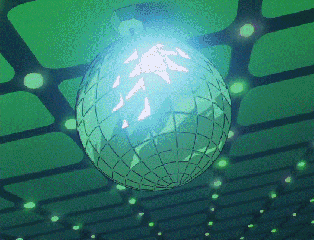

Música

Ah, nada melhor do que uma cafeteria á tarde.
Depois de uma verdadeira odisseia pelo mercado, acompanhada, admito, de uma empolgação irresponsável diante das promoções, minhas mãos já começavam a protestar contra a quantidade de sacolas que eu insistia em carregar. O peso puxava meus braços para baixo como uma representação física de todas as decisões impulsivas que tomei nos últimos quarenta minutos. Mas, em minha defesa, quem é que consegue resistir quando aparece um monte de plaquinha vermelha anunciando desconto?
Nesse estado de exaustão, dividida entre o cansaço e a necessidade urgente de fazer uma pausa, que meus olhos encontraram uma pequena cafeteria na esquina. Era daquelas que chamam atenção sem precisar gritar. Fachada discreta, janelas amplas, algumas plantas decorando a entrada e um aroma irresistível de café recém-passado escapando pela porta entreaberta.
Eu entrei sem pensar duas vezes.
E eu vou te dizer: Não me arrependo nem um pouco.
O café servido ali era tão bom que me fez questionar todas as vezes em que achei que sabia preparar uma xícara decente. O sabor era encorpado na medida certa, equilibrando intensidade e suavidade de um jeito ofensivo pra qualquer café que já passou pela minha cozinha. Acho que devo ter me acostumado a beber coisas medíocres em perceber. Mas, pelo menos agora, senti estar redescobrindo o prazer de saborear algo preparado com tempo, técnica e um certo carinho.
Enquanto o vapor subia lentamente da xícara, espalhando um perfume quente e reconfortante pelo ar, deixei meu olhar vagar pelo ambiente.
O lugar conseguia ser aconchegante sem cair naquele visual clichê. Tudo parecia ter sido pensado com cuidado. Móveis de madeira escura contrastavam com paredes claras, pequenas plantas ocupavam prateleiras e mesas, luminárias lançavam uma iluminação amarelada e suave que transformava o fim da tarde em algo quase nostálgico. Ao fundo, uma música baixa preenchia os espaços vazios sem disputar atenção com as conversas discretas dos outros clientes.
Era um espaço perfeito para descansar, organizar os pensamentos ou só procrastinar com uma elegância surpreendente. Sorri sozinha antes de me acomodar melhor na cadeira, relaxando finalmente os ombros, que pareciam carregar muito mais do que simples compras.
"Definitivamente eu vou voltar aqui.", a ideia surgiu de forma tão espontânea que nem parecia um pensamento; soava mais como uma decisão já tomada. “Sei lá, talvez pra um café da manhã, uma tarde solitária ou talvez...”
Eu estava a poucos segundos de mergulhar em mais um daqueles devaneios existenciais desnecessários quando, do nada, um grito atravessou a cafeteria como um trovão.
— PARADA AÍ, SENHORITA!
Ergui a cabeça num sobressalto tão brusco que quase derrubei minha xícara. Durante um breve e glorioso segundo, considerei a possibilidade de a cafeteria estar sendo assaltada. Mas, quando olhei melhor, percebi que era bem pior do que isso.
Era o Ash.
Completamente deslocado da realidade, ele surgiu na entrada do estabelecimento usando nada além de uma cueca azul, uma toalha amarrada no pescoço como se fosse uma capa e uma máscara de papelão recortada com a habilidade motora de uma criança de cinco anos. Ele estava com o braço estendido na minha direção, o peito inflado e uma expressão heroica, ou pelo menos acho que era essa a intenção, ele assumia a pose dramática de alguém prestes a impedir o maior criminoso da história.
— VOCÊ ESTÁ COMETENDO UM CRIME GRAVÍSSIMO!
Fiquei encarando aquela figura por alguns segundos, tentando decidir se aquilo era uma alucinação provocada pela cafeína, um sonho idiota ou se eu realmente conhecia alguém capaz de fazer um espetáculo desses em plena luz do dia. Infelizmente, a voz denunciava tudo. Não havia a menor possibilidade de ser outra pessoa.
— Ash... o que você tá fazen...
Tentei perguntar, mas nem consegui terminar.
— NÃO! — interrompeu ele, levantando um dedo de maneira teatral. — VOCÊ NÃO PERCEBE QUE A FORMA COMO ESTÁ SEGURANDO ESSA XÍCARA É UM COMPLETO ATENTADO À CIVILIZAÇÃO?
Ele começou a caminhar lentamente na minha direção, como um fiscal autoproclamado da etiqueta cafeeira.
— DESCULPE, MAS EU TENHO O DEVER MORAL DE IMPEDIR PESSOAS DESEQUILIBRADAS COMO VOCÊ DE CIRCULAREM EM PLENA LUZ DO DIA!
Seu discurso era carregado de um moralismo tão artificial que parecia ter saído de uma apresentação escolar sobre boas maneiras. Eu, por outro lado, já não sabia se ria, se fingia que não o conhecia ou se levantava da cadeira e mudava de país. E não, antes que você pergunte: eu também não faço a menor ideia do motivo de ele estar fazendo isso.
Mas, se a intenção era passar vergonha.. ele conseguiu e não foi pouco não. Parabéns.
Ali estava meu querido amigo, incorporando uma versão falida de um super-herói urbano, no centro de uma cafeteria tranquila, transformando um ambiente pacífico em um espetáculo de constrangimento coletivo. Ao redor, os clientes reagiam cada um à sua maneira. Alguns escondiam o riso atrás das xícaras; outros observavam a cena com aquele olhar típico de quem lamenta ter saído de casa naquele dia. Havia também os que pareciam genuinamente convencidos de que aquilo fazia parte de alguma intervenção artística muito conceitual.
O barista, coitado, permanecia imóvel atrás do balcão segurando um pano de prato, encarando o Ash com uma expressão vazia.
Quando finalmente chegou perto o suficiente, Ash segurou minha mão com a delicadeza de um rinoceronte e. sem demonstrar a menor preocupação com meu espaço pessoal, reposicionou meus dedos ao redor da xícara com uma solenidade religiosa.
— AGORA SIM! É ASSIM QUE SE SEGURA UM BOM E VELHO CAFÉ! — proclamou com o orgulho de quem acabara de impedir uma catástrofe nacional.
Ele fez até um aceno satisfeito com a cabeça, admirando o próprio trabalho. Em seguida, Ash puxou uma xícara de café de sabe-se lá onde e levou a bebida aos lábios, tomando um gole demorado e fechando os olhos com uma expressão de paz, como um sábio que acabara de alcançar a iluminação.
Eu só respirei fundo. Eu olhei para o teto, depois para o café, depois novamente pra ele. Esse era, infelizmente, o tipo de pessoa que fazia parte do meu círculo de amizades.
Muito legal, não é?
— EI! VOCÊ AÍ! — a voz estridente de uma das funcionárias atravessou a cafeteria como uma sirene de emergência. — DEVOLVE O MEU CAFÉ AGORA, SEU LADRÃO SEM-VERGONHA!Todas as cabeças se voltaram para Ash ao mesmo tempo. Ele permaneceu imóvel, congelado no meio do salão como uma estátua feita às pressas. Mesmo escondido atrás daquela máscara de papelão ridícula, era impossível não perceber o pânico estampado em seu rosto. Seu corpo inteiro denunciava que havia sido pego em flagrante.
— Uhhh, haha! Que coisa, né? — balbuciou, soltando uma risadinha tão artificial que conseguiu tornar o silêncio ainda mais constrangedor.
Seus dedos afrouxaram sem querer e a xícara escapou de suas mãos. O impacto contra o piso ecoou por toda a cafeteria. A porcelana explodiu em dezenas de fragmentos, enquanto o café se espalhava pelo chão em uma pequena poça fumegante, selando oficialmente o desastre.
Ninguém chegou a dizer uma única palavra. Ash também não. A única decisão racional que seu cérebro conseguiu produzir foi.. correr.
Num movimento brusco, ele girou nos calcanhares e disparou em direção à saída como se sua vida dependesse disso, abandonando para trás uma trilha composta por cacos de porcelana, café derramado e toda a dignidade que ainda lhe restava.
— VOLTA AQUI! VOLTA AQUI, JÁ!Dois seguranças, ambos com porte físico suficiente para dobrar um poste no meio, partiram imediatamente em sua perseguição.
— PARA AGORA MESMO! — berrou um deles enquanto atravessava a porta.E lá se foi ele. Correndo com o desespero de quem tentava escapar do próprio apocalipse. Embora, considerando a situação, a única coisa realmente entrando em colapso fosse a reputação dele.
.. Que idiota.
"O que deu na cabeça dele?", a pergunta ecoou na minha mente enquanto eu continuava encarando a porta por onde Ash havia desaparecido.
— E essa cara de vento, mulher?
A voz surgiu tão de repente que quase me fez derrubar a cadeira, de novo. E antes mesmo que eu pudesse reagir, um estalo de dedos ecoou bem diante do meu rosto.
— Eeeeeei! Terra chamando!
Pisquei algumas vezes até finalmente focar na dona da voz. Era a Kenda. Ela apareceu do nada, como se tivesse sido materializada ali só pra interromper meu estado de choque. E, com a maior naturalidade, inclinou o corpo para o lado e lançou um olhar em direção à rua. Ainda era possível enxergar, ao longe, dois seguranças correndo atrás de uma figura quase seminua usando uma toalha como capa. Os três diminuíam de tamanho conforme se afastavam, até desaparecerem completamente entre os prédios.
Kenda soltou um sorrisinho de canto.
— Ah, claro.. o Ash fazendo merda de novo. Quem diria, não é? — O sarcasmo em sua voz era tão refinado que quase soava como um elogio.
— Nem me fala... — suspirei, esfregando o rosto com uma das mãos na tentativa de recuperar um mínimo de dignidade por associação.
Ela puxou a cadeira à minha frente e se jogou nela, relaxando como se estivesse na sala da própria casa. Kenda cruzou uma perna sobre a outra e pegou o cardápio apenas por protocolo.
— Fala aí, o que cê tá fazendo aqui? — perguntou, folheando as páginas com um desinteresse que deixava nítido que não estava lendo nada.
— Ahhn... tomando um café? — respondi, levantando uma sobrancelha.
— Ah, é, eu devia ter imaginado isso. Como eu sou burra, não é? — rebateu, fechando o cardápio com um toc seco e o largando sobre a mesa. — Bom, eu tava procurando o Ash. O resto do pessoal resolveu sair hoje e a gente veio caçar aquela criatura pra ir numa balada. Só que... considerando os acontecimentos dos últimos cinco minutos, acho que o compromisso dele agora é responder por furto e destruição de patrimônio.
Ela fez uma pausa breve e, depois, deu de ombros.
— Entãoooo. ele tá fora dos planos. — cada palavra escorria em ironia, já estava acostumada a comentar desastres causados pelo mesmo indivíduo.
Então ela apoiou o queixo sobre a palma da mão e me lançou um olhar carregado daquele cinismo divertido que parecia permanente em seu rosto.
— E você? Vai com a gente ou pretende continuar bancando a emo? — perguntou.
— Por que eu deveria? Balada nunca foi muito a minha praia. — empurrei minha xícara vazia alguns centímetros pela mesa, observando-a deslizar lentamente até parar. — Deixa eu adivinhar.. isso é coisa da Ashley, não é?
Kenda levantou um dedo.
— Nahhh, não dessa vez. Isso é coisa do Jeffrey. — Ela se levantou lentamente e se virou para o balcão. — Ô! Me vê um pra viagem, por favor?
O atendente, já acostumado com certo nível de caos, apenas assentiu com um sorriso automático e registrou o pedido sem fazer qualquer pergunta. Considerando tudo o que tinha acabado de acontecer ali dentro, um café para viagem provavelmente era a parte mais normal do expediente.
Poucos minutos depois, eu e Kenda já caminhávamos pela calçada, acompanhando a longa faixa de asfalto aquecida pelo sol persistente do fim da tarde. Pequenas rachaduras cortavam a pista aqui e ali, enquanto o calor acumulado durante o dia ainda subia do chão em ondas quase invisíveis. A cidade começava a desacelerar aos poucos, mas ainda havia carros passando, gente voltando do trabalho e aquele ruído urbano constante servindo de trilha sonora para nossa conversa.
Ou melhor, para a tentativa de Kenda em me convencer a acompanhá-los naquela tal balada. Uma ideia que já me parecia péssima desde o instante em que foi mencionada. E conseguia piorar consideravelmente quando eu lembrava que a brilhante mente responsável pelo plano era ninguém menos que Jeffrey.
Sinceramente, eu devia ter cometido algum crime gravíssimo em outra vida.
— Então deixa eu ver se entendi... — comecei, encarando Kenda com a expressão mais confusa que consegui produzir. — Aquele imbecil do Jeffrey resolveu enfiar todo mundo numa caixa fechada, lotada de gente suada, música alta e um monte de desconhecido tentando trepar com qualquer coisa que respire.. e vocês só aceitaram?
Só de imaginar aquele cenário, já sentia minha alma implorando por misericórdia.
— Sim, ué? Por que a gente negaria? — Kenda respondeu, dando um gole no café recém-comprado antes de continuar. — Mas, SEGUNDO ELE, essa é diferente. Ele disse que é uma boate "mais civilizada". Que tem drinks refinados, música de qualidade, um ambiente mais cult. Essas coisas.
Ela fez aspas no ar ao pronunciar a última palavra.
— Eu duvido muito que exista alguma balada assim, mas aquele doido JURA que sim. — Kenda então inclinou levemente a cabeça, estreitando os olhos como alguém prestes a resolver um quebra-cabeça. — Falando nele, qual é a desse seu ranço todo com o Jeffrey? Toda vez que o nome dele aparece, você parece que quer arrancar o pescoço dele.
Soltei um suspiro longo.
— Por que será, não é? — olhei para ela com uma ironia tão carregada que quase dava para tocá-la. — Será que não tem nada a ver com o fato de ele ficar tentando dar em cima de mim igual um completo retardado?
— Ué, mulher? E daí? — Kenda deu de ombros como se aquilo fosse o menor dos problemas. Em seguida, abriu um sorriso malicioso. — Aproveita logo, mulher! Agarra esse homem e vai se divertir!
Ela soltou uma gargalhada tão alta que algumas pessoas na calçada olharam discretamente na nossa direção, curiosas para descobrir o motivo de tanto escândalo. Eu revirei os olhos.
— Cala a boca. — resmunguei, acertando um soco no braço dela. Fraco, mas simbólico.
Kenda levou a mão ao local atingido e começou a esfregar o braço de leve, rindo ainda mais.
— Hahaha! Tá, tá bom, tô só brincando! Haha! — Kenda ergueu as duas mãos em um gesto exagerado de rendição, embora o sorriso divertido em seu rosto deixasse claro que ela não se arrependia de nada. — Mas agora falando sério.. eu acho que cê devia ir, viu Miska?
Ela diminuiu um pouco o ritmo da caminhada para acompanhar meus passos.
— De novo, por que eu deveria? — perguntei, franzindo a testa.
— Tu sabe que ficar trancada naquele seu quarto fedorento enquanto ouve musiquinha triste é pedir pra definhar! Vai criar raiz no chão desse jeito! — disse, logo depois dando uma leve cutucada no meu braço. — Bora curtir, mulher! Bora viver!
— Eu saio com vocês o tempo todo, Kenda. — retruquei.
— Sai? Sério? — ela cruzou os braços. — Porque, pelo que vejo, cê só aparece quando alguém praticamente invade o seu quarto e te sequestra! Pra você topar um rolê por vontade própria, a gente tem que ressuscitar três mamutes, provocar uma tempestade solar, alinhar todos os planetas do Sistema Solar e prometer café de graça.
— Ai, Kenda.. cê sabe eu só—
Ela parou abruptamente, e quando me virei para encará-la, encontrei uma expressão completamente diferente daquela que ela costumava exibir. O sorriso havia desaparecido. O deboche dera lugar a um olhar firme e fraternal.
— Você só nada! — sua voz saiu surpreendentemente calma. Depois, ela apontou o indicador na minha direção — Escuta uma coisa. Se você não fizer um esforço pra sair dessa bolha, ninguém vai fazer isso por você. Vida social não cai do céu, mulher! Às vezes a gente precisa levantar da cama, aceitar um convite meio idiota e dar uma chance pra viver alguma coisa diferente!
Ela respirou fundo antes de continuar.
— Olha, eu sei que tu trabalha pra cacete, que você gosta do seu canto e tal. Cê sabe que não tem problema nenhum em você querer ficar sozinha de vez em quando. Mas o que tu faz é praticamente sumir do mundo, poxa! Existe uma diferença enorme entre gostar de ficar sozinha e só se esconder de todo mundo. — disse Kenda, abrindo os braços de leve. — Só.. tenta sair dessa sua bolha pelo menos por hoje, deixa essas suas obrigações pra lá só um pouco, mulher. Pode ser?
Fiquei em silêncio por uns instantes, mas também não demorou para que toda a minha resistência começasse a ruir, pedaço por pedaço, dada o quão dolorosamente certa Kenda estava. No fim das contas, não me custava nada tentar. Era só uma noite. Por mais que não fosse a minha praia, pode ser que aquilo fosse o que eu precisava: um pouco de contato humano que não acontecesse apenas dentro da minha zona de conforto.
No pior cenário possível, eu iria embora mais cedo. Quanto ao melhor cenário.. não faço a menor ideia. Mas acho que vale a pena descobrir.
Suspirei devagar.
— Hmm... tá bom. — dei um pequeno encolher de ombros. — Eu vou.
— AÍ SIM, MULHER! — gritou, comemorando como se eu tivesse acabado de aceitar um pedido de casamento ou anunciado que havia ganhado na loteria. E antes que eu pudesse dizer qualquer outra coisa, senti uma mão agarrar meu braço. — ENTÃO BORA!
— Ei! E-espera! Agora??? Mas e o resto do grupo!? — perguntei, surpresa, tentando recuperar o controle da situação.
— Ahhhh, fodam-se eles! Eles chegam depois! — respondeu. — O Jeffrey falou que essa boate fica aqui por perto. A gente chega num instante!
Dito isso, ela aumentou o ritmo da caminhada sem sequer verificar se eu ainda a acompanhava. Na prática, aquilo deixou de ser uma caminhada e passou a se parecer muito mais com uma operação de resgate. Caminhamos por longos e exaustivos trinta e nove minutos. Eu sei porque contei eu contei cada maldito minuto. Aquela promessa de que ficava "logo ali" era uma mentira descarada.
A cada quarteirão vencido, meus pés protestavam um pouco mais. O calor do asfalto parecia atravessar a sola das minhas botas, minha respiração já começava a perder o ritmo e minhas pernas cogitavam declarar independência do restante do meu corpo. Em determinado momento, cheguei até a sentir que meus músculos estavam funcionando apenas por pena.
Kenda, por outro lado, parecia intocável. Nem um sinal de cansaço. Nem uma gota de suor. Nem sequer uma alteração na respiração. Ela seguia conversando e gesticulando como se estivéssemos passeando por um parque numa manhã de domingo.
— Ihhhhhh, já cansou? Mó franguinha, aí! — Kenda abriu um sorriso debochado sob a medida para irritar qualquer pessoa. — A gente nem andou tudo isso, porra!
— Ah, fecha essa boca... você faz academia! — retruquei entre uma respiração e outra. Cada frase saía interrompida pela tentativa desesperada de recuperar o fôlego.
— Heh! Faço mesmo, ué? — ela soltou uma risadinha convencida.
Depois, Kenda passou a mão pelos cabelos num movimento exageradamente dramático, deixando que o vento espalhasse os fios dela para trás como se estivesse estrelando um comercial de xampu. Em seguida, virou levemente o corpo de perfil e apoiou uma das mãos na cintura, exibindo o próprio físico com orgulho.
— Mas relaxa, tá? Qualquer dia eu te levo comigo. Depois de alguns meses você sai da academia com um corpão igual ao m—
— Tá, tá... já entendi. — ergui uma das mãos para interrompê-la antes que ela começasse uma palestra sobre os benefícios da hipertrofia, alimentação balanceada e glúteos definidos. — A gente chegou ou ainda falta atravessar metade do continente?
— Chegou, criatura. — ela apontou discretamente com o queixo. — Tá literalmente na tua frente.
Anúncio
Vibração Urbana
Aqui você encontra o melhor lugar pra encher a cara, dançar, descansar e tudo demais, sem groselha, chefe! Seja lá o que você for, o que importa é que venha aqui e curta essa caralhada de coisas maneiras que a gente pode te oferecer. Como por exemplo:
Pista de Dança FODÁSTICA
Requebra esse corpo sob um chão mais epilético do que um arco íris, acompanhando as batidas do melhor da música eletrônica da casa!OS DJ MAIS GENTE FINA DO MUNDO
Enlouqueça com as batidas mais foda e envolvente desse lugar!NOSSA CASA É SUA CASA
Alugue um quarto para passar o tempo fazendo o que quiser, não importa o que for! Disponibilizamos o melhor conforto pra você!Levantei os olhos, e a cena diante de mim me acertou como uma marreta. Entre dois prédios, um corredor estreito conduzia até a entrada da boate. Faixas de luzes de néon banhavam o lugar em tons vibrantes de azul, rosa e roxo, pulsando em perfeita sintonia com os graves da música que escapavam do interior do estabelecimento. A batida era tão intensa que parecia atravessar o concreto, vibrando sob meus pés antes mesmo de eu cruzar a entrada.
Ali, o ritmo cotidiano da cidade parecia ter sido substituído por uma realidade própria, onde tudo era mais barulhento, mais colorido e infinitamente mais caótico. Pessoas caminhavam de um lado para o outro tomadas por uma euforia quase contagiante. Algumas riam alto sem motivo aparente; outras conversavam aos berros para vencer o volume da música. O cheiro adocicado de perfumes caros se misturava ao álcool, ao cigarro e ao calor produzido pela multidão, formando uma combinação característica daquele tipo de ambiente.
Era uma verdadeira fauna urbana em êxtase. Cada indivíduo parecia interpretar um personagem diferente.
Tinha quem dançasse mesmo antes de entrar, quem equilibrasse copos e garrafas com uma habilidade impressionante e quem já demonstrasse sinais evidentes de que a noite tava avançada demais pra qualquer outra decisão sensata. Pessoas brindavam na própria fila, enquanto outras transformavam a calçada em uma extensão improvisada da pista de dança.
E, obviamente.. OBVIAMENTE também existia AQUELE grupo.
Casais, e também pessoas que haviam acabado de se conhecer, trocavam carícias tão explícitas que ignoravam por completo a existência de espectadores. Mãos ousadas exploravam corpos alheios, bocas se fundiam com avidez, mostrando que a fronteira entre diversão e luxúria já tinha sido cruzada há tempos.
Observei aquilo por alguns segundos em silêncio. Depois abaixei a cabeça e balancei-a em negativa.
— Boate civilizada.. — murmurei, quase para mim mesma.
Minha voz carregava uma mistura curiosa de incredulidade, espanto e desgosto. A impressão era a de que eu não estava prestes a entrar em uma balada, mas sim em uma espécie de zoológico humano onde qualquer vestígio de bom senso havia sido colocado em licença.
É fogo, há poucos minutos eu estava convencida de que dar uma chance àquele programa poderia me fazer bem. Agora uma parte cada vez maior de mim começava a se arrepender dessa decisão. Acho que teria sido muito mais sensato permanecer no meu quarto com um café ruim na mesa e alguma música no meu ouvido.
Kenda, por outro lado, parecia enxergar uma realidade completamente diferente. Ela soltou uma gargalhada alta e espontânea.
— Bonito, né? — seu olhar passeou pela fachada iluminada da boate como o de uma criança diante de um parque de diversões. As luzes de néon refletiam em seu rosto enquanto ela admirava a arquitetura moderna do prédio, sofisticada e carregada daquela pretensão estética típica dos lugares que se esforçam para parecer exclusivos. — Vambora! Bora se envolver, danada!
Antes mesmo que eu pudesse articular uma frase de protesto ou ao menos respirar direito, ela agarrou meu braço com a urgência de quem retira alguém de um incêndio, mas, no caso, o incêndio era minha hesitação, e me arrastou porta adentro com a força de um furacão em salto plataforma.
— EI! ESPERA AÍ! — protestei, tropeçando atrás dela.
Tentei fincar os pés no chão numa tentativa desesperada de oferecer alguma resistência, mas era o equivalente a tentar parar um trem de carga usando um palito de dentes como barreira.
Em segundos, já estávamos posicionadas diante de um dos bares mais movimentados da boate. A bancada, esculpida em mármore negro polido, refletia as luzes do ambiente como um espelho escuro, enquanto uma faixa de LEDs branco-azulados sob sua estrutura criava a impressão de que o balcão flutuava alguns centímetros acima do chão.
Atrás dele, os bartenders trabalhavam de uma forma que hipnotizaria qualquer um facilmente. Garrafas giravam entre os dedos, coqueteleiras cruzavam o ar em movimentos perfeitamente sincronizados e taças eram preenchidas com líquidos de cores vibrantes que não pareciam muito a fim de seguir a lógica culinária. Algumas bebidas recebiam fumaça aromática; outras eram decoradas com frutas, ervas e pequenos detalhes que as faziam lembrar mais peças de arte contemporânea do que simples drinques.
Kenda puxou um dos bancos altos e se jogou sobre ele como quem já conhecia aquele lugar melhor do que a própria sala de casa. O assento girou levemente com o impacto, arrancando dela um sorriso satisfeito.
Antes mesmo que eu conseguisse abrir a boca, ela já havia chamado um dos bartenders.
— Duas! Uma pra mim e pra essa coisinha aqui! — disse Kenda, passando a mão pelos meus cabelos e os esfregando rapidamente. Eu dei um tapa no braço dela como resposta e ela parou na hora.
Destaque para o fato de que ela nem sequer cogitou a remota possibilidade de me perguntar o que eu queria beber. Apenas pediu.
Alguns instantes depois, duas garrafas de vidro elegantemente decoradas foram colocadas sobre o balcão. Kenda pegou uma delas e a estendeu na minha direção com uma solenidade desnecessária, como se estivesse me entregando um artefato lendário capaz de mudar o rumo da humanidade.
— Vira logo isso daí, Miska! — disse ela, já levando a própria garrafa aos lábios e tomando um longo gole, demonstrando a intimidade de quem claramente já havia repetido aquele ritual muitas e muitas vezes.
Eu alternei meu olhar entre a bebida e a Kenda por alguns instantes.
— Eu não gosto de álcool. — minha resposta saiu quase num murmúrio. Após isso, desviei os olhos, fingindo desenvolver um interesse científico pela textura do mármore do balcão.
Kenda soltou um suspiro tão exagerado que parecia ter acabado de ouvir que o mundo ia acabar porque alguém preferia suco.
— Meu Pai, tu é fresca pra caralho, hein? — exclamou e, sem esperar qualquer reação da minha parte, levantou a mão para chamar novamente o bartender. O rapaz se aproximou na mesma hora. — Ei, amigo! Traz um refrigerante pra essa criança antes que ela comece a fazer birra?
— Birra? — perguntei, olhando para ela na mesma hora, incrédula com tamanha falta de vergonha. — Você nem perguntou pra mim o que eu queria, cara!
— Quê? — Kenda inclinou a cabeça e levou uma das mãos à orelha, fazendo uma péssima encenação de quem tentava ouvir alguma coisa. — Não tô escutando nada, bebê! A música tá alta demais. Repete aí!
Eu só revirei os olhos.
— Você é uma insuportável. — disse, cruzando os braços.
— Eu prefiro “carismática”, tá? Mas obrigada pelo carinho! — respondeu Kenda, debochada.
O bartender apenas assentiu com um discreto sorriso de canto. Mantinha a postura profissional, mas era evidente que estava se divertindo às custas da nossa discussão. Aposto que aquela não era nem de longe a conversa mais estranha que ele tinha presenciado naquele lugar.
Kenda voltou a beber, satisfeita consigo mesma. Enquanto ela permanecia ocupada em sua missão etílica, aproveitei para observar o ambiente pela primeira vez desde que fui socialmente sequestrada. Também era uma excelente estratégia para evitar que minha mão encontrasse, acidentalmente, a cara dela.
A boate era um monumento extravagante ao hedonismo moderno.
O teto se erguia a vários metros de altura, sustentando um gigantesco lustre formado por dezenas de globos espelhados suspensos em diferentes níveis. Cada esfera capturava os feixes coloridos dos refletores e os espalhava pelo salão em centenas de fragmentos luminosos, criando a ilusão de um céu artificial povoado por pequenos astros girando lentamente sobre nossas cabeças.
A pista de dança ocupava praticamente o coração do edifício. Seu piso, composto por painéis luminosos, alternava figuras geométricas em perfeita sincronia com a música. Triângulos, hexágonos e linhas pulsavam em sequências hipnóticas que davam a estranha impressão de querer reconfigurar o cérebro de qualquer um que permanecesse encarando aquilo por tempo demais. Acima da multidão, o DJ dominava sua cabine como um xamã digital. Cercado por enormes painéis de LED, manipulava mesas de som enquanto gráficos, ondas e explosões de cor surgiam nas telas obedecendo fielmente ao ritmo das batidas. Cada grave atravessava o ar como uma pequena onda de choque, vibrando no peito, nos ossos e até nos dentes.
O restante do salão seguia a mesma lógica de exagero. Telões revestiam parte das paredes, canhões de luz riscavam o ambiente sem descanso, colunas metálicas refletiam o brilho das projeções e máquinas de fumaça liberavam nuvens que transformavam tudo numa paisagem quase onírica. Entre um clarão e outro, centenas de pessoas dançavam como se o mundo lá fora tivesse deixado de existir.
Olha, eu até gosto de música eletrônica. De verdade. Nunca tive problema nenhum com esse estilo. Mas aquilo já ultrapassava a simples ideia de ouvir música.
Era uma avalanche sensorial cuidadosamente planejada pra bombardear cada um dos cinco sentidos ao mesmo tempo. Luzes, sons, fumaça, calor, vozes, perfumes e graves se misturavam numa intensidade tão ridículo que a fronteira entre diversão e delírio parecia desaparecer por completo.
— Aproveite. — disse o barman com cordialidade, depositando diante de mim uma lata de refrigerante tão gelada que pequenas gotas de condensação já escorriam por sua superfície metálica. Naquele verdadeiro oceano de bebidas alcoólicas, aquilo era praticamente um bote salva-vidas.— Ah... obrigada. — respondi, ainda distraída, com a cabeça perdida entre as luzes alucinantes da boate e uma sequência completamente aleatória de pensamentos que nem eu saberia explicar.
— Bora, manda isso pra dentro, safada! — provocou Kenda, abrindo outra garrafa de cerveja que, tecnicamente, havia sido comprada para mim. Ela levou o gargalo aos lábios e deu um gole generoso.
Suspirei, peguei a lata e, por hábito, dei uma leve sacudida.
Instantaneamente, eu me arrependi.
Pssshhhhh!A lata irrompeu como um pequeno vulcão carbonatado.
Um jato violento de refrigerante atingiu meu rosto em cheio, acertando meus olhos, nariz e boca. A espuma escorreu pela minha testa, deslizou pelas minhas bochechas, infiltrou-se no meu pescoço, encharcou a parte da frente do meu colete e terminou repousando no meu colo com uma dedicação invejável. Em poucos segundos, eu tava toda pegajosa, exalando cheiro de refrigerante e questionando todas as decisões que me trouxeram até aquele exato momento da minha existência.
Fiquei imóvel, ainda tentando processar aquela humilhação coberta de açúcar, gás e arrependimento. Ao meu redor, algumas pessoas interromperam a conversa apenas para assistir ao desastre. Um casal na mesa ao lado fez um esforço visível para conter o riso. O barman virou discretamente o rosto, fingindo organizar algumas garrafas enquanto os ombros tremiam em uma tentativa fracassada de permanecer profissional
Já Kenda.. ela travou uma batalha perdida contra o próprio riso. Começou com uma risadinha abafada, depois outra, até que acabou engasgando no próprio gole de cerveja. Tossiu, bateu no peito duas vezes e, quando finalmente conseguiu recuperar o ar, explodiu numa gargalhada tão alta que rivalizou com o volume da música eletrônica.
— MAS É BUURRA PRA CARAAAAAAALHOOOOOOOO! HAHAHAHAHAHAHAH!! — berrou entre uma crise de riso e outra, segurando a barriga como se seus órgãos internos estivessem desistindo de existir.
Senti uma veia imaginária pulsar na minha testa. Apertei a lata amassada com tanta força que ela estalou entre meus dedos.
— PARA DE RIR E ME TRÁS UM PANO, SUA DESGRAÇA! — gritei, sentindo a mistura pegajosa escorrer pela minha roupa enquanto minha paciência evaporava na mesma velocidade do gás que acabara de escapar da lata.
7 MINUTOS DEPOIS
Lá estava eu do lado de fora da boate, mais precisamente nos fundos do estabelecimento, onde o som ensurdecedor da pista chegava apenas como um grave distante, abafado pelas paredes de concreto. A brisa noturna finalmente conseguia atravessar o calor sufocante do salão, embora estivesse longe de resolver o meu real problema.
Esfreguei a frente da blusa com a palma da mão na esperança ilusória de fazer o refrigerante evaporar por força de vontade. O tecido continuava úmido, pegajoso e com um inconfundível aroma artificial de cola.
Soltei um longo suspiro e dei um leve tapa na própria testa. Que tipo de criatura é capaz de fazer uma coisa dessas? É, eu sei.. eu. Não precisava responder, eu já sabia disso.
Bom, mesmo assim, nem tudo está perdido. A explosão açucarada fez um estrago considerável, mas, milagrosamente, ainda restava um pouco de refrigerante na lata. Não era muito, porém já representava uma pequena vitória em meio ao desastre.
"Melhor isso do que um soco na cara.", é o que costumam dizer por aí.
Dei de ombros e decidi terminar a bebida ali mesmo. Que se foda essa festa.
Encostei as costas contra a parede fria da boate, fechei os olhos por um instante e levei a lata aos lábios. O líquido gelado deslizou lentamente pela minha garganta, trazendo uma sensação de alívio desproporcional ao simples ato de tomar refrigerante. Naquele instante, senti alguns segundos de paz.
Mas.. eles duraram pouco, é claro.
Eu ouvi passos. O som vinha da lateral esquerda do beco, acompanhado por uma respiração pesada que lembrava um maratonista asmático tentando completar os últimos metros de uma corrida enquanto carregava um piano nas costas. Havia urgência naquele ritmo, como se quem estivesse correndo estivesse fugindo de alguma coisa ou alguém.
Afastei a lata dos lábios e virei o rosto de leve, pois eu já esperava qualquer coisa. Um padre praticando parkour, um cavalo pilotando uma motocicleta deixariam de ser acontecimentos surpreendentes pra mim naquele ponto.
Mas não. Eu exagerei bastante. Era só o Ash, de novo.
Ainda vestido com aquela fantasia ridícula, ele surgiu cambaleando até parar bem na minha frente. Quase tropeçou nos próprios pés durante o percurso e precisou se apoiar nos joelhos assim que parou, arquejando com tanta intensidade que parecia ter escapado da morte por uma margem bem pequena.
— Ufa... ufa... acho que consegui despistar eles... huuufff... — arfou, tentando recuperar o fôlego. Sua respiração era tão pesada e irregular que lembrava um cachorro idoso depois de decidir, por razões desconhecidas, correr atrás da própria cauda por cinco minutos seguidos. Alguns segundos depois, finalmente levantou a cabeça e abriu um sorriso exageradamente amigável. — Ah! Oi, Miska! Que coincidência te encontrar aqui! Cê tá diferente, cortou o cabelo? Fez academia? Trocou de perfume? Aprendeu tricô? O que cê tá fazendo aqui, hein? Hein? Hein?
O sarcasmo escorria de cada palavra com a sutileza de um caminhão atravessando a parede de uma casa. Era o tipo de humor tão descarado que chegava a ser engraçado desde que não fosse direcionado a você.
Infelizmente, era.
Passei a mão pelos cabelos ainda úmidos de refrigerante e soltei um suspiro tão profundo que carregava boa parte do meu cansaço existencial.
— Ash, cê ainda tá vestido com essa merda? Sério mesmo? — perguntei, encarando aquela roupa com um misto de incredulidade e pena. — Por quê? O que aconteceu na sua infância pra você ser assim?
Ele ergueu um dedo, pronto para apresentar sua defesa diante do tribunal da moda.
— Ah, qual é! Eu só queria brincar de super-herói! Q-qual é o problema nisso? Huuuff... — respondeu entre uma arfada e outra.
Ele ainda tentou estufar o peito e assumir uma pose heroica, mas o próprio corpo dele sabotou a tentativa. Antes mesmo de concluir o movimento, seus ombros despencaram outra vez, vencidos pelo cansaço. O resultado final lembrava menos um defensor da justiça e mais alguém prestes a desmaiar depois de subir dois lances de escada.
— Você tem a mesma idade que eu, isso já é um baita vilão na minha vida. — falei antes de levar outro gole do refrigerante, que a essa altura já havia perdido completamente o gás e boa parte da dignidade. — E, respondendo à sua pergunta de antes.. a Kenda me arrastou até essa festa porque decidiu que nós precisávamos "curtir a noite". O pessoal tava te procurando. Queriam te chamar pra vir junto.
A expressão dele mudou quase instantaneamente.
— Ah, puts! Sério? Eu nem fazia ideia! — respondeu, arregalando os olhos. — Onde é que eles tão?
Lancei um olhar rápido para o interior da boate. Com cuidado, empurrei a porta apenas o suficiente para abrir uma pequena fresta e enfiei a cabeça por ela, tentando localizar o restante do elenco.
Ashley foi a primeira que encontrei. Ela atravessava a pista de um lado para o outro aos pulos, rindo tão alto que conseguia competir com a própria música. Conversava numa velocidade enorme, gesticulando sem parar, como se tivesse substituído a corrente sanguínea por uma mistura altamente concentrada de cafeína e energético. Cada frase parecia dar origem a outras cinco antes mesmo que a anterior terminasse.
Poucos metros adiante estava o responsável principal desse desastre, o Jeffrey. Ou, pelo menos, alguém tentando convencer o universo de que sabia dançar. Seus movimentos eram uma sucessão caótica de gestos desconexos, como se uma entidade extraterrestre tivesse recebido a missão de reproduzir uma coreografia humana apenas observando vídeos em câmera lenta. Braços, pernas e tronco pareciam operar sob comandos independentes, formando um espetáculo tão desajeitado que chegava a ser hipnotizante.
O mais impressionante era sua autoconfiança. Jeffrey executava cada passo com a convicção de quem acreditava estar conquistando a pista inteira. Na realidade, porém, o pequeno grupo de garotas diante dele ria muito mais da apresentação tragicômica do que de qualquer suposto charme que ele imaginava possuir. Patético.
Mais ao fundo, isolada do restante da civilização, estava Jellie. Sentada tranquila em um sofá, usava aqueles fones de ouvido enormes que praticamente engoliam sua cabeça. Mastigava doces com serenidade enquanto mantinha os olhos fixos em algum ponto indefinido do ambiente. Parecia existir em uma dimensão paralela, onde a música da boate, as luzes piscando e a gritaria coletiva simplesmente não tinham permissão para entrar. Honestamente, talvez ela fosse a pessoa mais lúcida naquele lugar.
Então meus olhos encontraram Kenda. Ah, é claro.
Essa daí tava fazendo exatamente o que se esperava dela: bebendo como se o amanhã fosse um problema de outra pessoa. Seu copo jamais permanecia vazio por mais de alguns segundos. Sempre que o líquido desaparecia, outro surgia misteriosamente em suas mãos, como se algum deus alcoólico estivesse reabastecendo seu estoque em tempo real. A bebida não parecia deixar ela mais calma, pelo contrário. Cada gole parecia adicionar mais combustível à personalidade explosiva que ela já possuía naturalmente. No centro da pista, Kenda dominava o ambiente com uma facilidade sobrenatural. Dançava sem qualquer preocupação com técnica, elegância ou coerência. Seus passos alternavam entre movimentos sincronizados e improvisos desengonçados, mas tudo era executado com uma convicção tão absoluta que qualquer erro acabava parecendo intencional.. acho que já tá melhor que o Jeffrey.
Ela ria sem reservas. Gritava frases aleatórias para desconhecidos. Agarrava pessoas pelo braço e as arrastava para dançar como se fossem amigos de infância que ainda lhe deviam um favor. Em questão de segundos, transformava estranhos em cúmplices involuntários da própria animação.
Era também curioso o fato de que ninguém parecia se importar. A energia caótica que irradiava dela era contagiante. Pouco a pouco, quem cruzava seu caminho acabava entrando na brincadeira, acompanhando seus passos ou só rindo da situação. Era como assistir a uma reação em cadeia alimentada pelo mais puro entusiasmo. Kenda não estava apenas aproveitando a festa. Ela parecia determinada a convencer todo mundo de que aquela noite precisava ser inesquecível, custasse o que custasse.
Fecho a porta devagar, com um suspiro resignado e os olhos revirando tão forte que quase vejo minha infância passando de novo.
— Sei lá. — respondi, dando de ombros. — Se quiser descobrir, entra lá e caça eles.
— Tá bom! — respondeu Ash de imediato, com a animação de uma criança que acabou de descobrir que vai passar o dia inteiro em um parque de diversões.
Ele já ia dando os primeiros passos em direção à entrada, mas eu estiquei o braço na frente dele, bloqueando a passagem.
— Ô, porra! — disparei. — Cê não vai entrar todo pelado, não! Vai botar uma roupa primeiro, criatura!
Ash parou, ergueu o queixo com confiança e abriu um sorriso que, na cabeça dele, devia ser irresistível.
— Hah! Gata, você tá falando com o cara mais estiloso desse grupo!
Antes que eu formulasse uma resposta venenosa o suficiente para colocá-lo de volta na realidade, Ash deu meia-volta e disparou em direção a um arbusto próximo e, sem qualquer hesitação, mergulhou lá dentro. O arbusto começou a balançar de maneira tão violenta que parecia palco de um exorcismo particularmente agressivo. Galhos sacudiam em todas as direções, folhas voavam pelo ar e, de tempos em tempos, algum pedaço de tecido surgia brevemente antes de desaparecer de novo no meio da vegetação.
Eu cruzei os braços e esperei. Esperei, esperei. Esperei tanto que cheguei a me perguntar se ele tinha sido engolido pelo arbusto. Até que, depois do que pareceu uma eternidade, Ash surgiu de dentro do arbusto completamente suado, ofegante, com folhas presas no cabelo e uma expressão de triunfo incompatível com a realidade.
Ele estava vestido como um palhaço. Peruca multicolorida, maquiagem exagerada cobrindo o rosto inteiro, um nariz vermelho reluzente, suspensórios espalhafatosos, luvas brancas e botas gigantescas que pareciam ter sido fabricadas pra humilhar qualquer apreciador do bom gosto.
Ele abriu os braços, orgulhoso da própria escolha, como se esperasse aplausos. E eu fiquei encarando aquela afronta visual por alguns segundos, tentando convencer meu cérebro de que aquilo era apenas uma alucinação causada pelo estresse.
Mas não, não era.. haha. Era real! É o que eu mereço.
— Você tá ridículo. — declarei, serena.
Ash, por outro lado, irradiava autoconfiança. Com o peito estufado e um sorriso convencido estampado no rosto pintado, ele desfilou na minha direção. Suas botas gigantes batiam contra o chão produzindo um hilário "pof... pof... pof...", como se cada passo tivesse sido retirado diretamente de um desenho animado barato.
Quando chegou perto, ele passou um dos braços ao redor do meu pescoço e, antes que eu pudesse protestar, ele começou a apertar meu nariz repetidas vezes, sincronizando cada movimento com um irritante “fon! fon!”.
— Bora, Miska! Tá muito frescurenta pro meu gosto, hein!? — anunciou, fazendo até mesmo uma pequena reverência teatral enquanto ria da própria idiotice.
E então, Ash resolveu ultrapassar a última fronteira do bom senso. Com uma rapidez impressionante, desferiu um tapa atrevido na minha bunda. Minha lata de refrigerante parou no meio do caminho até a minha boca e senti meu sangue subir direto para o rosto, acompanhado por uma pressão perigosamente familiar atrás dos olhos. Minha expressão permaneceu imóvel, mas, por dentro, eu tava puta da cara.
É, ele REALMENTE escolheu o caminho da morte.
— VAMBORA! VAMO ARRASAR NESSA FES—
10 MINUTOS DEPOIS
Ashley, agora promovida a enfermeira de guerra improvisada, segurava um chumaço de algodão embebido em álcool contra o que sobrou do rosto de Ash. O nariz dele estava deslocado, praticamente uma obra abstrata. Quatro dentes sumiram no processo, e espero que estejam sendo pisoteados no chão da boate nesse exato momento. Seus olhos inchados e a coloração roxa que já começavam a se formar indicavam que ele iria ostentar um visual Frankenstein meets circo dos horrores pelos próximos dias.
— H-haha!.. Foi uma boa palhaçada, n-não foi? H-h-haha cof cof... — ele forçou uma risada entre gemidos, tentando manter o bom humor mesmo com a dignidade implodida.
— Não força, bobão. — Ashley disse, com uma mistura de pena e costume.
— Por que você achou que aquilo seria uma ideia? Parece até que nem conhece ela. — Kenda disse, de braços cruzados e um sorriso irônico nos lábios.
Jeffrey e Jellie tentaram, e falharam miseravelmente em conter o riso. Suas risadas abafadas escaparam em forma de pequenos ruídos explosivos, numa reação própria de um ar que se recusava a compactuar com o absurdo. Eu apenas balancei a cabeça, em um gesto que misturava desapontamento e um certo prazer discreto.
— Se tentar de novo, faço você engolir essas botas de palhaço, seu merdinha. — Afirmei, olhando diretamente nos olhos dele.
E mesmo com o rosto inchado, sangue escorrendo pelo queixo e provavelmente vendo tudo em duplicidade, Ash ainda sorriu. Um sorriso torto, idiota, satisfeito. Era inacreditável, ele era uma aberração emocional, e talvez um pouco imortal.
Depois de toda essa comédia de erros, decidi que já tive estímulos demais por uma noite. Foi aí que descobri que a boate oferecia uns quartos para aluguel, e, sem pensar duas vezes, fui me isolar em um deles. Eu me larguei na cama, sem vontade de nada além de existir em silêncio.
A televisão do quarto transmite algum programa aleatório, provavelmente uma reprise de um reality decadente, e deixo rolar. Àquela altura, qualquer coisa que não envolvesse palhaços, tapas e bebidas explosivas já estava de bom tamanho.
Knock knock knock knock.Quatro batidinhas secas na porta me arrancam da minha letargia catatônica. Solto um suspiro arrastado de quem só queria ficar largada por mais umas seis horas e me arrasto em direção à porta, torcendo para que fosse apenas o vento... ou um engano.
Ao abrir, me deparo com um sujeito jovem e completamente destruído. Não destruído no sentido estético (embora também fosse o caso), mas no sentido de que ele parecia ter atravessado uma batalha em pleno apocalipse zumbi. Suado, com o cabelo num estado lamentável e sustentando um sorriso trêmulo que, em vez de carisma, transmitia pura exaustão.
— A-a-ah! Oi! Você é... é nova por aqui, né? — Ele começa, tropeçando nas próprias palavras com uma energia descompensada. — Nunca tinha visto alguém tão... e-e-extravagante! Muito prazer!
— Se veio pra fazer graça, volta por onde veio. — respondo sem nenhum esforço para disfarçar meu tédio, cruzando os braços com firmeza.
— Q-que isso! Não, imagina! — Ele balança as mãos, nervoso, tentando apagar a primeira impressão. — Eu só... achei você interessante e resolvi te seguir até aqui. Cê parece ser bem gente boa! Vem sempre nesse lugar?
Dou uma encarada seca, inclinando levemente a cabeça.
— Cara, cê acabou de dizer que eu sou novata. E me pergunta se eu "venho sempre aqui"? Isso foi pra tentar puxar assunto ou você só é assim mesmo?
Ele desvia o olhar e coça a cabeça com uma das mãos, claramente tentando manter alguma dignidade de pé.
— Tá, tá, beleza... Eu admito, eu tô meio... quebrado. Mas tô de pé ainda, ó! — Ele força uma pose confiante, erguendo o peito com orgulho. Só que o tremor leve nas pernas e o cansaço estampado na cara o traem na mesma hora. — … Talvez um pouco cansado só.
Silêncio.
— Será que eu posso... ficar aqui um tempo? — pergunta, quase sussurrando, e seu tom vacilante denuncia que ele já esperava um não.
Dou uma respirada. Tá bom, Miska... não custa, não precisa ser babaca. Talvez renda alguma história esquisita depois. Ou, no mínimo, alguma distração.
— Beleza, mas já vou te avisando.. nada de palhaçada! — aviso, abrindo espaço com o pé.
Ele entra com a reverência de quem estivesse atravessando as portas do paraíso. Literalmente desaba na cama, tomando conta do lado direito com um suspiro de alívio tão dramático que parecia ensaiado. Me jogo de volta pro meu canto, fingindo que aquele interlúdio não tivesse existido.
— Então... qual é o seu nome? — ele pergunta, ajeitando-se na cama com a tranquilidade de quem pretende passar a noite inteira ali. — O meu é Wally! Wally Bailey!
— Miska.
— Miska? Que nome... peculiar, não? — Ele inclina levemente o rosto, tentando me enxergar melhor sob a luz fraca do ambiente. — Nunca ouvi esse nome nem nos cantos mais perdidos do mundo, hahaha! Mas, ei, não me entenda mal, é um nome maneirinho.
— ...Valeu. — murmuro, enquanto troco de canal pela décima vez, procurando algo que não pareça extraído diretamente do fundo de um poço de tédio.
Enquanto trocava de canal pela décima vez, comecei a sentir aquele tipo de olhar que queima, sabe quando você sabe que tá sendo encarada, mesmo sem ver? Pois é. Olhei de canto e, claro, confirmei a suspeita: Wally me observava com um foco clínico, seu olhar era tipo um scanner que tentava mapear minha alma.
— … O que que você tá olhando, cara? — disparei, com uma firmeza que o fez dar um leve pulo no lugar, pego em flagrante como uma criança com a mão no pote de biscoitos.
— A-Ah! Nada, nada! Eu só... só percebi que nossas roupas meio que combinam... — ele respondeu, a voz trêmula como quem improvisa a desculpa no susto. — Tipo... eu sei lá, achei curioso, só isso. Nada demais!
Levantei uma sobrancelha e deixei meu olhar escorregar brevemente sobre o meu próprio corpo, depois sobre o dele, já com uma expressão que misturava tédio e descrença. Era óbvio que ele estava desesperado pra puxar conversa, mas fazia isso da maneira mais constrangedora possível.
Eu usava um colete preto sobre uma camisa social branca, calça preta e botas com fivelas, tudo em tons sóbrios e encaixados, quase formais. Já ele vestia uma camisa social azul clara, jeans escuros e um par de Jordans que gritavam casualidade suburbana.
Resumindo? Nossas roupas não combinavam em absolutamente nada. Zero.
— Tá de sacanagem, né? Literalmente não tem nada haver. — soltei, voltando meu olhar pra TV, agora ainda mais frustrada. — Se quiser conversar, tenta não soar como um esquisito. Dica de ouro, viu?
— A-ahh, t-tá... eu só... — ele ainda tentou recuperar a dignidade, mas as palavras pareciam escorregar da boca como sabão molhado. Claramente, não era o tipo de pessoa que lida bem com confrontos diretos.
Revirei os olhos e soltei um suspiro longo, como quem já sabe que aquela noite ainda vai render muito mais do que paciência deveria permitir.
— Você o quê, garoto? Diz logo e age como gente! — disparei, a voz elevada, praticamente jogando as palavras no rosto de Wally. Minha paciência já estava no limite, e ele claramente percebeu isso, porque começou a tremer ainda mais, e cada sílaba minha parecia empurrá-lo mais fundo no próprio pânico.
Mas então, algo inesperado aconteceu.
Ele soltou um suspiro longo e resignado e, de repente, aquele olhar aflito se dissipou. No lugar, surgiu um olhar mais firme, calmo demais.
— Tá bom... — ele começou, agora com um tom muito mais controlado. — Primeiramente, eu vim aqui também porque queria entender o que rolou entre você e aquele seu amigo. Vi a forma como você olhou pra ele... parecia que queria matá-lo. E, do jeito que ele tava, todo arrebentado, deu pra sacar que alguma coisa séria tinha acontecido. Então, o que foi?
Enquanto dizia isso, ele apoiou o queixo na mão, assumindo a pose de quem frequenta cafés filosóficos, esperando calmamente por uma resposta.
E eu? Fiquei ali parada, tentando processar. A postura dele destoava tanto do garoto trêmulo de segundos atrás que me deixou momentaneamente sem reação. Foi uma mudança tão brusca que, por um segundo, eu me perguntei se estava mesmo falando com a mesma pessoa. Parecia até que o Wally socialmente desajeitado tivesse saído de cena, dando lugar a alguém muito mais lúcido e centrado.
Sacudi a cabeça duas vezes, como quem tenta se reconectar com o presente, limpei a garganta e respondi, agora num tom mais contido:
— Ah.. aquele idiota, ele tinha dado um tapa na minha bunda, então eu meti o solavanco nele pra aprender a me respeitar mais da próxima vez, simples assim.
Wally escutou atentamente e, assim que processei sua expressão, percebi aquele sorrisinho cínico se formando. Ele parecia se divertir com a imagem que acabara de construir na cabeça.
— Uau, haha! Então... imagino que seu amigo não deve se arrepender de nada, né? Se ele morresse nas suas mãos, provavelmente morreria feliz! — soltou, num tom provocador que beirava o insolente.
Antes mesmo que ele terminasse de rir da própria piada, meu punho já tinha encontrado o braço dele. Um soco direto daqueles que são mais sobre fazer um ponto do que causar dor real, embora a dor tenha sido um bônus, claro.
Wally gritou na hora e levou a mão ao local atingido, tentando conter a dor como quem segura um riso durante uma bronca. Mas, pra minha surpresa, ou talvez nem tanta, ele não pareceu ficar nem um pouco abalado.
Na verdade... o desgraçado tava rindo.
— Repete isso mais uma vez e o morto aqui vai ser você, idiota. — rosnei, o punho ainda fechado, com a voz carregada de raiva, arrastando cada palavra, cuspindo fúria incandescente com cada sílaba.
— C-Calma, haha! Tá tudo bem, tudo bem! Desculpa, sério! — Wally rebateu entre risos nervosos e gemidos de dor, ainda esfregando o braço. — Eu juro que não era por mal... eu só queria entrar na brincadeira também... Ai! Você é forte pra caramba, que inferno!
— Hum. Não me arrependo nem um pouco. — respondi, com um olhar de quem ainda tinha meio soco guardado no bolso. — E, só pra constar, que brincadeira de merda.
Antes que o clima voltasse a esquentar, um barulho alto vindo da televisão fez com que nós dois instintivamente virássemos o rosto para a tela, o barulho funcionou como um gancho invisível, lançado pela TV, puxando nosso queixo. Estava passando um daqueles filmes de ação absurdamente exagerados: metralhadoras cuspindo fogo, explosões desnecessárias a cada cinco minutos, sangue em quantidade quase cômica. O tipo de filme que todo mundo diz odiar, mas secretamente assiste quando ninguém está olhando.
— Hm… você curte esse tipo de filme? — Wally perguntou, sem desviar os olhos da carnificina gráfica na tela.
— Pra ser honesta? Eu não sou muito criteriosa com filme, não. Se tá passando, tá valendo. — disse, enquanto me ajeitava melhor na cama, puxando um travesseiro pra apoiar as costas. — … Mas vou admitir que esse aqui parece promissor.
— É, concordo. — ele respondeu, agora coçando o queixo, pensativo. — Quer assistir comigo?
A pergunta veio de forma tão casual que eu nem soube o que sentir exatamente. Foi uma mistura de “por que não?” com “é sério isso?”. No fim das contas, acabei não pensando muito. Apenas deixei acontecer.
— Pode ser... também, não tenho nada melhor pra fazer nesse lugar mesmo. — respondi, os olhos ainda cravados na tela, já absorvida pela sequência de ação desenfreada.
E então, passamos as horas seguintes mergulhados naquele filme que, a princípio, era só mais um ruído de fundo qualquer, mas que acabou se transformando, inesperadamente, em um pequeno cinema improvisado.
Conversamos mais do que eu achei que seria capaz. Comentamos cada cena absurda, questionamos decisões dos personagens, rimos de mortes ridiculamente encenadas e até filosofamos por alguns minutos sobre como a violência gratuita virou entretenimento mundial.
Sério mesmo, chegou ao ponto de nós dois chorarmos com uma das cenas mais dramáticas do filme. Nem em mil anos eu imaginaria que isso aconteceria comigo tão cedo. Já vi dezenas, talvez centenas de filmes, e mesmo assim, por algum motivo que eu ainda não consegui identificar, aquele ali mexeu comigo mais do que deveria.
Quer dizer... era pra ser só mais um daqueles filmes de ação genéricos, cheio de tiros e explosões gratuitas. Mas não, tinha algo a mais ali. Talvez no enredo, na atuação, talvez na trilha sonora... ou talvez fosse só o momento certo. Vai saber. O fato é que me pegou de jeito. E olha, nem tô reclamando. Tudo tem sua primeira vez, não é isso que dizem?
Quando os créditos finalmente começaram a subir, devagar, naquele ritmo preguiçoso que só serve pra te lembrar de que a experiência acabou, Wally bateu palmas com entusiasmo exagerado, ainda sorrindo.
— Hah! Que filmaço, senhoras e senhores! — ele disse, teatral, aplaudindo suavemente, transformando a sala num teatro imaginário. — E aí, Miska? Qual o veredito?
— Ah... foi bem melhor do que eu esperava, pra ser sincera. — respondi, desviando o olhar, numa tentativa bem desajeitada de esconder o quanto eu realmente tinha gostado.
— Hah, qual é! Eu vi sua cara no meio do filme, tá achando que engana quem? — Wally provocou, cutucando meu braço, claramente querendo arrancar uma confissão minha.
No momento em que senti o toque, minha reação foi automática: dei um tapa seco na mão dele, que se afastou rindo tal qual quem presencia a coisa mais divertida do mundo.
— Ahem! Não me toque, por favor, eu detesto ser toca—
Antes mesmo de conseguir terminar a frase, Wally já tinha se lançado sobre mim, começando um ataque inesperado de cócegas, focado, claro, na minha barriga, o ponto mais vulnerável possível.
O que aconteceu em seguida foi pura rendição. As risadas escaparam da minha garganta sem permissão, não por achar graça da situação, mas porque era humanamente impossível resistir.
— E-EI! P-PARA! Hahah! Isso é golpe baixo, seu miserável! Hahahaha! — gritei, tentando inutilmente afastar as mãos dele enquanto me contorcia na cama, em completo estado de derrota.
— Não vou parar até você admitiiiiir! — Wally respondeu num tom zombeteiro, triunfante, como quem sabia exatamente onde cutucar — tanto no corpo quanto no orgulho.
No meio das minhas risadas descontroladas, ainda me debatendo para escapar das cócegas, meu corpo agiu antes que minha cabeça pensasse, e o resultado foi um chute forte, completamente acidental, que atingiu Wally em cheio. Ele foi lançado contra a porta do quarto como um boneco mal equilibrado, e o baque foi tão alto que o silêncio posterior pareceu mais alto ainda.
— Ai, caralho! Wally! — exclamei, pulando da cama com a mesma brusquidão de alguém que acaba de levar um choque. Corri até ele, que agora escorava o corpo contra a porta, soltando um grunhido de dor baixo, mas sofrido. — Desculpa! Juro que foi sem querer! Eu não queria te acertar tão forte assim!
— Ha... hah, relaxa. Tô inteiro. — Wally respondeu com um sorriso meio torto, ofegante, estendendo a mão pra que eu o ajudasse a se levantar. — A culpa foi minha também. Brincar com gente perigosa tem dessas.
Depois de se erguer com alguma dificuldade, ele soltou um suspiro comprido e, mesmo ainda segurando o braço, sorriu com aquele olhar despreocupado de sempre.
— Ufa... reitero o que disse antes: você é muito mais forte do que parece, Miska. Se tivesse colocado um pouco mais de força nesse chute, eu ia precisar de uma cirurgia corporal, porra! — disse, rindo como um aventureiro que sobreviveu a um perigo iminente.
— Ah, Wally, isso é bom que agora você pensa duas vezes antes de fazer essas suas babaquices, né? — respondi, rindo junto, embora ainda meio culpada.
— Não são babaquices quando você claramente se diverte com elas, garota. — ele rebateu com seu tom cínico clássico, aquele que dá vontade de bater e rir ao mesmo tempo.
— Ah, eu não—
Knock knock knock.Três batidas soaram na porta, interrompendo meu contra-ataque verbal. Meu corpo ficou alerta quase no automático, e eu imediatamente arqueei uma sobrancelha. Sem dizer nada, girei a maçaneta com cautela e abri a porta.
Era Jellie.
— Jellie...? — perguntei, surpresa. — O que você tá fazendo aqui?
— Ahhh, então você tá aqui, Miska? Engraçado, eu é que ia te perguntar isso. — disse ela, tomando um gole de refrigerante casualmente. — Eu tava passando por aqui, fazendo minha ronda com meu refri, quando ouvi uma barulheira absurda vindo desse quarto. Sério, parecia que alguém tinha sido arremessado na parede ou sei lá. E... quem é esse aí?
Ela apontou diretamente para Wally, que ainda estava atrás de mim, ligeiramente descomposto, mas tentando manter uma pose digna.
— O-oooii! — disse Wally, levantando uma das mãos num aceno hesitante, o sorriso trêmulo, como quem ainda não tinha decidido se era melhor parecer simpático ou simplesmente correr dali.
— Ah, esse aqui? Esse é o Wally. — expliquei de forma casual, talvez até demais. — Ele apareceu do nada no meu quarto, perguntou se podia ficar por aqui por um tempo já que ele tava um trapo... e, bom, eu aceitei.
Tentei soar despreocupada, mas o olhar que Jellie lançou em resposta foi tudo menos convencido. Ela apertou os olhos como quem fareja uma desculpa mal contada, ou pelo menos mal estruturada, e cruzou os braços, claramente avaliando a cena com ceticismo.
— Hm... sei. — respondeu, num tom que misturava ironia e julgamento. Em seguida, desviou o olhar em direção ao canto esquerdo do quarto, já perdendo o interesse. — Enfim. Tô voltando pra festa. Vocês vão? Não? Beleza, foda-se então.
E antes que qualquer um de nós pudesse formular uma resposta decente, ela já havia colocado os fones de ouvido, encaixando-os com precisão cirúrgica, e girado nos calcanhares com uma indiferença quase artística. A música começou a vazar levemente dos fones enquanto ela desaparecia pelo corredor, sem mais nem menos.
Ficamos em silêncio por um momento, absorvendo o turbilhão que foi a presença breve e intensa de Jellie.
— … Então… essa é sua amiga? — Wally perguntou, com um tom de voz que deixava claro seu estado de leve confusão existencial. Parecia estar se perguntando se aquilo foi uma interação humana legítima ou uma simulação mal programada.
Virei-me devagar para encará-lo, suspirando de leve.
— É, essa é a Jellie. — confirmei, tentando não rir. — Ela pode parecer meio... intensa, às vezes. Mas relaxa, ela é legal. Só tem um jeito peculiar de demonstrar.
— É, eu entendo... — disse Wally, passando a mão pelos cabelos, claramente tentando reorganizar os próprios pensamentos. Seu olhar vagou por alguns segundos até que, de repente, ele arregalou os olhos como quem acaba de ser atingido por uma ideia brilhante. — Ah! Já sei! Vamos seguir o conselho da sua amiga maluca e curtir um pouco essa festa, Miska! Tô me sentindo bem mais descansado agora, sendo franco... a gente não tem muito o que fazer aqui por enquanto, né?
— Ah, eu não sei não, cara. — respondi, cruzando os braços de forma defensiva. Uma pontada de hesitação me atravessou, como uma lembrança esquecida batendo à porta. A realidade — ou pelo menos a parte dela que eu vivia tentando ignorar — voltava a fazer sombra por trás da animação momentânea.
— Mas ué, por que não? — ele perguntou, inclinando a cabeça com um olhar genuinamente curioso.
Soltei o ar devagar antes de responder.
— Sei lá... esse tipo de ambiente nunca foi muito a minha cara. Minha amiga praticamente me empurrou pra vir, falou que seria bom pra mim, uma chance de “me soltar mais”, tentar socializar. Mas... eu não sei se essa é realmente a melhor forma de fazer isso. — falei, enquanto passava as mãos devagar pelos próprios braços, num gesto quase inconsciente de autoproteção.
Wally me observou com atenção, depois deu de ombros com aquele jeito despreocupado que parecia ser parte natural do seu corpo.
— Poxa, Miska... mas olha só: você tá aqui, agora, conversando comigo. A gente se conheceu nesse lugar. Não parece tão errado assim, né? — disse com um sorriso leve. — E olha que a conversa tá fluindo. Tá funcionando, mesmo que você nem tenha percebido ainda.
Fiquei em silêncio, mastigando mentalmente as palavras dele. Elas tinham peso. Tinham lógica. Mas ainda assim... eu hesitava.
— Hm... — murmurei, sem esconder a incerteza.
— Além disso — ele continuou, agora empolgado — como é que você vai saber se esse ambiente realmente não é pra você se nunca se permite vivê-lo de verdade? É pra isso que a gente tá aqui, não é? Pra experimentar o novo, quebrar padrões, sair um pouco da própria bolha! Vem comigo! A gente desce, dá uma olhada na festa... se não curtir, beleza, a gente dá o fora. Vai dançar um pouco, ou, sei lá, te levo pra comer alguma coisa. Tem um monte de opção! Nem que seja só pra tomar um refrigerante e rir dos bêbados tentando dançar, vale a pena.
Enquanto falava, ele deu alguns passos entusiasmados em minha direção, quase como se já estivesse prestes a me puxar pela mão.
Foi aí que arqueei uma sobrancelha e dei dois passos pra trás, instintivamente.
— Ééé.. me desculpe? — perguntei, confusa, tentando entender se ainda estávamos falando de sair pra espairecer... ou se ele estava tentando me arrastar pra um date improvisado.
— É simples assim, Miska! Vem curtir comigo, vai ser divertido! — disse Wally, exibindo aquele sorriso bobo e desarmado que ele parecia carregar no bolso pra toda ocasião.
— Isso era pra ser um convite sutil pra um encontro ou algo do tipo? Porque, se for, já vou adiantando: não tô interessada. — respondi com um tom firme e direto, sem rodeios. Minha expressão também não deixava muito espaço pra interpretação.
Mas, como sempre, Wally ignorou qualquer senso de timing social e deu mais um passo à frente, com aquele mesmo sorriso leve que começava a me irritar mais pela insistência do que pela intenção.
— Ah, qual é... só me dá uma chancezinha! — implorou, quase de forma patética, com um tom que parecia meio brincalhão, meio desesperado.
— Eu nem te conheço direito, cara. — respondi, arrastando as palavras com uma mistura de cansaço e incredulidade.
— E você acha que a gente vai se conhecer como, então? Por osmose? — retrucou ele, levantando as mãos como quem apela pro bom senso. — Olha, só quero que você se permita aproveitar um pouco, mesmo que seja só por uma noite. Não precisa ser nada demais. Um passo de cada vez. Quem sabe dançar um pouco... conversar mais. Sei lá. Você merece desligar a cabeça.
O tom dele agora era carinhoso e suave, mas ainda com aquela insistência que sabia exatamente onde cutucar.
Soltei um resmungo, seguido de um suspiro longo e impaciente. E antes que ele sequer abrisse a boca pra tentar mais alguma linha de convencimento barato, agarrei o braço dele com firmeza e o puxei comigo em direção àquela balada barulhenta que eu vinha tentando evitar desde que pus os pés ali.
— Você é chato pra cacete, hein? Que saco! — reclamei, me arrastando pelo corredor com ele a reboque.
Wally riu, tentando acompanhar meu passo desajeitado enquanto tropeçava nos próprios pés.
— A-Ai! Calma! Deixa eu me recompor, pelo menos! — exclamou entre risos, tentando se equilibrar pra não cair feito um boneco molenga no chão.
Ok... talvez eu ainda estivesse um pouco frustrada com a teimosia dele. Com a insistência, com a leveza exagerada. Mas, no fundo, parte de mim sabia que ele não estava exatamente errado. Talvez eu realmente estivesse relutando demais. Talvez fosse só medo disfarçado de autopreservação.
No fim das contas... não custa tentar, né?
Ao voltarmos para a balada, fomos imediatamente engolidos pela atmosfera caótica e ensurdecedora que definia aquele lugar: música em volume absurdo, corpos se movendo freneticamente ao ritmo da batida, copos nas mãos, luzes pulsando, e uma gritaria constante que parecia vir de todos os cantos ao mesmo tempo.
Olhei em volta, absorvendo a cena como quem encara uma tempestade de cores e ruídos, e imediatamente revirei os olhos. Lancei um olhar de soslaio para Wally, sem esconder meu tédio.
— Ugh... ainda dá tempo de desistir? — perguntei com um tom arrastado, quase morto por dentro.
Wally respondeu apenas com um sorriso. Era aquele tipo específico, malicioso e triunfante, que transmite uma resposta inteira sem precisar de uma única palavra.
— Nem vem com essa, cara. Eu não vou entrar ali ne—
— Ahhhh sim, você vai sim! — ele me interrompeu, já me puxando com força em direção à massa humana.
— Ngh! Ai! Desculpa, mil perdões! — exclamei, tropeçando nos próprios pés enquanto tentava acompanhar.
O ambiente era um caos. O lugar estava tão lotado que andar parecia mais um exercício de guerra. Meu corpo era empurrado de um lado pro outro como uma bolinha de pinball, esbarrando em ombros, copos, braços aleatórios. A cada nova colisão, eu ouvia um xingamento, um resmungo ou um olhar furioso, e minha vontade de evaporar dali só aumentava.
Meu Deus do céu... ou esse cara sabe exatamente o que tá fazendo, ou ele é simplesmente doido de achar que pode atravessar esse campo todo e não tomar um porradão.
Mas, surpreendentemente, conseguimos passar ilesos. Ninguém nos socou, ninguém nos jogou bebida na cara, e isso já era uma vitória. Finalmente, Wally parou em uma área um pouco menos claustrofóbica, o que, ali, já era quase um milagre, e se virou pra mim com um sorriso desafiador.
— E agora... já sabe o que vem, né? — disse ele, levantando as mãos e fazendo aquele clássico sinal de “paz e amor”, numa encenação tão exagerada que faltou apenas um raio laser de fundo.
— Ehmmm... o quê?! — perguntei, confusa demais até pra lembrar como se falava o próprio nome.
E foi aí que ele começou.
Wally simplesmente... dançou. E não foi qualquer coisa improvisada. Foram movimentos precisos, fluidos e sincronizados com o som eletrônico que tomava conta do lugar. Cada gesto parecia calculado, mas ainda assim natural.
Eu assisti, boquiaberta, não por vergonha, mas porque, sinceramente, o cara mandava muito bem. A pista de dança parecia ser o habitat natural dele. Ele se movia com uma segurança que inevitavelmente começou a chamar a atenção de quem estava por perto.
Eu me vi prestes a rir... não de deboche, mas de surpresa.
Fiquei ali parada por uns bons oito minutos, observando, com uma mistura de fascínio e constrangimento, o “show particular” que Wally fazia bem diante de mim. Ele dançava com uma confiança invejável, transformando a pista improvisada em seu palco particular. Enquanto isso, eu permanecia imóvel, desconfortável com os olhares que, mesmo não sendo diretamente voltados a mim, pairavam ao redor feito moscas sobre algo que não deveria estar exposto.
E foi bem no meio de um desses giros bem executados, quando eu já estava prestes a dar meia-volta e fingir uma súbita dor no joelho, que Wally avançou um passo, tomou minha mão e me lançou um olhar... sedutor. Ou, pelo menos, era o que ele provavelmente acreditava que estava fazendo.
— Tá boiando aí, Miska? Vem dançar comigo! — exclamou com entusiasmo, sem nenhum pudor de aumentar o volume da própria voz — e, com isso, arrastando ainda mais olhares em nossa direção.
Congelei.
— M-mas, mas, eu... eu nem sei d-dançar! — gaguejei, engolindo o pânico que subia como vapor, prestes a me sufocar. Não era só o convite inesperado que me fazia travar, mas também o fato de estar no centro das atenções. — Eu... eu...
Foi então que uma voz ao longe atravessou a música e me atingiu como um tijolo.
— UOOOOOU! VAI, MULHER! DANÇA COM O TEU HOMEM! — berrou Kenda, teatral como sempre, sua voz cortando o som da batida como uma adaga sarcástica.
Ao lado dela, claro, estava Jellie, registrando tudo com o celular na mão e aquele sorriso debochado que só ela sabia fazer.
— Quem diria que a garota emo agora tá na pista com um boy. Tô passada. — comentou ela, já filmando a cena com gosto.
E, como se isso não bastasse, a voz estridente de Ashley pipocou por cima de tudo.
— AIIIN, MINHA CRIANCINHA CRESCEU! QUE ORGULHO DA MINHA MISKA! — gritava ela, saltitando no mesmo ritmo do coração que eu sentia prestes a explodir.
— Hmmm... não sei, viu, gente... — murmurou Ash, com o olhar semicerrado. — Não me parece lá grande coisa. Esse cara tem cara de—
Antes que pudesse concluir a sentença, Jeffrey interveio do jeito mais Jeffrey possível: um soco certeiro na cabeça do Ash.
— Cala essa boca, Ash! — disse, com firmeza. — Nunca vi a Miska assim antes. Deixa ela em paz, pô!
— Ai, ai, ai, tá bom, já entendi! Que violência, meu Deus... — Ash reclamou, encolhendo-se enquanto levava as mãos à cabeça, tropeçando nas próprias palavras.
Foi nesse caos que Wally me puxou com delicadeza pra mais perto, e então começou a dançar comigo — dessa vez num ritmo bem mais brando, tentando me ajudar a entrar no clima intenso daquela música eletrônica com suavidade. Os primeiros movimentos foram, como esperado, um desastre: passos desajeitados, falta de coordenação total, e algumas tentativas de virar acompanhando a música que quase me derrubaram no chão. Em mais de um momento, ele teve que me segurar pelos ombros ou cintura para evitar que eu colapsasse em público.
Eu tava tentando. De verdade. Mas dançar com pessoas assistindo, ainda por cima, definitivamente não parecia ser uma habilidade minha.
Até que, num momento de pausa entre os passos desconexos, Wally parou, respirou fundo e me encarou com uma expressão calma, um daqueles olhares que parecem atravessar o ruído. Ele sorriu.
— Esquece o resto, Miska. Foca só em nós dois. Deixa teu corpo e tua cabeça fazerem o resto. — disse ele num tom surpreendentemente terapêutico.
Ele então se reposicionou, com a postura de quem vai recomeçar, mas sem pressão alguma, apenas me convidando pra uma nova tentativa, não me cobrando por uma performance.
— Vamos tentar de novo, tá? — perguntou, com aquele sorriso aberto e paciente que raramente se vê em situações de exposição pública como essa.
Fiquei em silêncio por alguns segundos. Meu cérebro queria hesitar, meu corpo já cogitava fugir... mas, por algum motivo, havia algo naquela entrega leve dele que me desmontava um pouco. Soltei uma risada breve, meio trêmula, meio desafiadora, e então assenti:
— Tá.
Dessa vez, segurei a mão dele com mais firmeza, não apenas por segurança, mas como uma forma silenciosa de dizer “ok, confio em você”. E então, começamos a dançar novamente.
Os primeiros movimentos, como era de se esperar, ainda saíram trôpegos, sem muito ritmo ou precisão. Mas, em vez de me deixar levar pela vergonha, resolvi observar. Comecei a analisar cada movimento de Wally com atenção cirúrgica, os passos, os giros, a forma como ele sincronizava o corpo com a batida. Aos poucos, os ruídos externos, as risadas distantes, os olhares dispersos, a música estourando nos alto-falantes, tudo foi se apagando. Restava só ele e eu, e um fluxo rítmico tentando nos carregar junto.
Não levou muito tempo para o meu corpo começar a se adaptar. Um ajuste aqui, outro ali, e logo eu estava reproduzindo os passos com surpreendente precisão. Meus movimentos, que antes pareciam descompassados e tensos, começaram a fluir com uma naturalidade que me pegou desprevenida. Eu estava dançando. E dançando bem.
Wally percebeu de imediato a virada, aquele tipo de percepção que só quem realmente se importa teria. E então abriu um sorriso orgulhoso, como quem tivesse acabado de ensinar a filha a andar de bicicleta.
— Aí sim! É disso que eu tô falando, garota! — exclamou, animado, enquanto se jogava em um breakdance tão preciso e ritmado que fez alguns ao redor abrirem espaço só pra vê-lo com mais clareza.
Entrei no embalo sem pensar. Imitei o movimento dele, mas à minha maneira — mais contido, mais refinado, adaptado ao meu corpo e à minha própria energia. Não queria só repetir. Queria fazer meu próprio ritmo.
Wally riu ao perceber que eu estava acompanhando, e eu não pude evitar rir de volta. Ainda havia um leve traço de constrangimento em mim, claro, mas ele já não dominava tudo.
E não parou por aí. Eu e Wally estávamos completamente entregues àquele momento, dançando como dois idiotas sem a menor preocupação com o que os outros ao redor pensavam. E o mundo se reduziu a luzes borradas, batidas eletrônicas e movimentos improvisados. Só existíamos nós dois ali, no meio daquele caos.
E então, no auge dessa nossa coreografia desajeitada e absurda... algo inevitável aconteceu.
Pisei mal. Meu pé vacilou, escorregou de leve, e meu equilíbrio foi direto pro espaço. Senti aquele segundo congelado em que você sabe que vai cair, e tudo que passa pela cabeça é: Merda. Porra. Fudeu.
— Merda, porra! — soltei alto, mais pra mim mesma do que pra qualquer um.
— Uepa! Opa, cuidado! — gritou Wally, num reflexo rápido, agarrando meu braço com firmeza antes que meu corpo encontrasse o chão da pior maneira possível.
Foi como uma cena de filme brega: nossos olhos se cruzaram enquanto ele me segurava, os dois em silêncio. Aquele gesto carregava a intensidade de alguém que acabara de me resgatar de um abismo forrado de espinhos, mesmo que fosse só o chão da balada pegajoso e cheio de glitter.
Ficamos assim por um segundo, estáticos e meio assustados, até que a tensão explodiu em gargalhadas. Não aquelas risadas constrangidas ou sociais, mas uma risada verdadeira, daquelas que você sente na barriga. A gente ria porque era ridículo. Porque estava sendo leve. Porque, de algum jeito, tudo aquilo fazia sentido.
Wally me ergueu com cuidado enquanto nossas risadas iam se dissolvendo pouco a pouco, como a espuma no fim de um copo de refrigerante.
E então, nos entreolhamos.
— Hah! E aí, o que achou?! — gritou Wally, tentando vencer o barulho ensurdecedor da música e das conversas ao redor. A voz dele chegou até mim meio abafada, mas clara o suficiente para entender a animação estampada nela.
Por um instante, hesitei. Passei a mão pelo meu próprio braço, como quem tenta reorganizar os próprios pensamentos antes de deixá-los escapar em voz alta. Era uma pergunta simples, mas a resposta carregava mais do que eu estava pronta pra admitir de cara.
— ...Eu... eu não vou mentir, foi incrível! — soltei, com um sorriso escancarado que eu sequer tentei esconder. Era impossível.
Wally sorriu de volta, ainda mais largo, e soltou uma risada satisfeita.
— Aí, tá vendo?! Você toda na defensiva no começo, dizendo que isso “não era a sua vibe”... e agora olha pra você! Rindo, dançando, se jogando na pista como quem nasceu aqui! — disse ele, me cutucando brincalhão na lateral da barriga.
Dei um pulo discreto e me afastei por reflexo, rindo leve.
— Ai, vai... eu só tava meio indecisa, só isso. — falei, meio encabulada, tentando manter a pose mesmo com o rosto provavelmente entregando tudo.
— “Indecisa”, é? Sei... — retrucou ele, com um olhar teatralmente cético e um revirar de olhos carregado de ironia. — Mas tudo bem, você tá se soltando agora e isso é o que importa. E ó, tem muito mais rolando por aqui. Então... o que me diz, hein? Hein?! — perguntou ele, exagerando na entonação, numa tentativa tão exagerada quanto de transformar a proposta na melhor ideia da noite.
Soltei uma risadinha e dei de ombros com aquele ar fingidamente indiferente que só disfarça o entusiasmo.
— Hum... claro, por que não? Acho que tô no pique agora. Pode mandar! — disse, arqueando uma sobrancelha e abrindo um sorriso de quem topa qualquer parada — ou pelo menos fingia que sim.
Wally correspondeu com a mesma energia.
— É disso que eu tô falando! Bora logo! — exclamou, virando de costas e começando a andar, gesticulando com as mãos para que eu o acompanhasse.
E eu fui. Sem questionar. Porque, por mais bizarro que parecesse, aquele lugar — que eu havia desprezado desde o início — começava a ganhar um tipo estranho de cor. Talvez fosse a música, a liberdade momentânea, ou talvez fosse só o Wally mesmo. Ele, com esse jeito caótico e insistente, me puxando pra fora de mim aos poucos. Irônico, né? Um cara que eu pensei que ia me fazer perder tempo... agora me fazia sentir que, finalmente, eu estava exatamente onde deveria estar.
Wally me conduziu até um canto quase escondido da balada, onde uma pequena e inusitada sorveteria funcionava como um oásis improvável em meio ao caos das luzes e batidas eletrônicas. Era um espaço apertado, mas aconchegante, com um balcão de madeira envernizada e um letreiro neon piscando suavemente acima dele, parecendo até pedir desculpas por competir com o restante da festa.
Nos acomodamos em duas cadeiras disponíveis atrás do balcão, afastados o bastante do tumulto pra conseguirmos ouvir um ao outro sem gritar.
— E então, qual vai ser, gata? — perguntou Wally com um sorriso que misturava doçura e aquela ironia sutil que ele parecia carregar por padrão.
Eu varri o cardápio com os olhos, analisando a vitrine refrigerada à nossa frente. Os sabores estavam lá, todos gritando por atenção: chocolate, morango, chiclete, creme, menta com chocolate, napolitano... Todos clássicos, todos com aquela aura nostálgica de infância, e todos absolutamente tentadores.
Minha boca encheu d’água antes mesmo de decidir. Me sentia escolhendo entre amigos muito próximos: impossível descartar qualquer um sem remorso.
Wally percebeu meu dilema e riu alto, daquela forma espontânea que só ele parecia conseguir fazer soar natural.
— Tá perdida, né? Eu entendo. Sempre fico nessa sinuca também. Mas no fundo, acabo voltando pro meu queridinho: menta com chocolate. — disse ele tipo quem revela um segredo diplomático de Estado. — Mesmo assim, dá vontade de experimentar todos. Só de pensar, minha alma salta da garganta e bate palminha.
— Nem me fala... — murmurei, ainda indecisa. — Eu amo napolitano, mas o de chiclete tá me seduzindo de um jeito muito errado agora. Olha aquela cor! Parece que vai me levar direto pra 2009.
— Hah, Miska… acho que a gente tá só passando vergonha mesmo! — disse ele, ainda rindo. — Vamos pedir logo o clássico, parar de drama. Você pega o napolitano, eu vou no chocolate. Democracia estabelecida.
Antes que eu pudesse opinar de verdade, ele já estava fazendo o pedido para um dos atendentes, que parecia absolutamente imune ao caos da festa ao redor. Wally pagou pelos dois sorvetes, pegou os copinhos, e me entregou o meu como quem oferece uma taça de vinho num jantar formal.
— Bon appétit, madame. — disse ele, fazendo uma pose afetada e lambendo o sorvete com toda a pompa de um crítico gastronômico num restaurante cinco estrelas.
— Ehhm... obrigada, monsieur. — respondi com um riso tímido, observando o sorvete antes de finalmente provar.
Permanecemos em silêncio pelos minutos seguintes — um daqueles silêncios que não chega a ser desconfortável, mas também não parece ter sido convidado. O único som que preenchia o espaço entre nós vinha das colheres raspando suavemente os copinhos de plástico e do estalo ocasional de um pedaço de casquinha quebrando na boca. Era uma pausa tranquila, quase contemplativa, mas que Wally aparentemente já considerava longa demais.
— Ei... quantos anos você tem mesmo? E o que gosta de fazer, assim, quando não tá dando patada em gente simpática? — perguntou ele, com um sorriso travesso e um brilho curioso nos olhos.
— Ahhn? Ah, tenho 17. — respondi após uma leve pausa, tirando a colher da boca e soltando um suspiro calmo. — No geral, gosto de ouvir música, ler umas coisas... principalmente histórias de terror ou suspense. Sabe, aquelas narrativas densas, meio sombrias, que fazem você duvidar de tudo no final. Me prendem de um jeito meio viciante.
Wally arqueou as sobrancelhas, genuinamente intrigado.
— Hmm, então você é do tipo leitora, hein? Interessante. Sendo bem honesto, eu prefiro assistir. Filmes, séries... acho mais dinâmico, sabe? Livro me dá sono às vezes. — disse com uma sinceridade cômica. — Mas não me entenda mal, também curto uma boa leitura de vez em quando. Só... preciso estar no clima certo.
Enquanto falava, ele se levantou da cadeira com um movimento preguiçoso, como quem não estava com pressa, mas também não via motivo pra ficar parado. Eu acompanhei o ritmo e me levantei também.
— Relaxa, Wally. Cada um tem seu jeito de absorver o mundo. Gosto é gosto, e tá tudo certo. — respondi com um meio sorriso, despreocupada. Ele retribuiu com outro, igualmente leve, quase cúmplice.
— Haha, você tem razão, garota. — disse ele, ajeitando o capuz que escorregava de seus ombros. — Vambora? A gente continua essa prosa no caminho de volta pro quarto. A noite ainda tá jovem, e eu tô curioso pra saber mais dessa criatura misteriosa chamada Miska.
Ele gesticulou com a cabeça em direção à saída e começou a caminhar tranquilamente.
Sem pensar muito, apenas fui.
— Bom, no meu caso eu tenho 19. Gosto bastante de música também, igual você — disse Wally, andando ao meu lado com as mãos no bolso. — Curto filmes e séries, principalmente os de ação e tragicomédia. Mas, se tem algo que me move de verdade, algo que me acende por dentro… é a arte!
A palavra saiu da boca dele carregada de entusiasmo, porém com um peso especial.
— Sério, eu acho fascinante quando alguém consegue condensar uma emoção inteira, uma história ou um pensamento complexo em uma simples folha de papel, uma tela, um traço. É mágico, você não acha?
Enquanto falava, Wally virou o rosto ligeiramente pra trás, me lançando aquele olhar curioso e esperançoso que a gente solta quando está vulnerável e torcendo pra ser compreendido. Continuávamos a caminhar pelo corredor do alojamento, em direção ao quarto.
— A-ah… sim, claro. Também acho interessante. — murmurei, tentando parecer mais firme do que realmente estava. — Eu costumava desenhar bastante quando era criança, na verdade. Era... terapêutico pra mim.
Minha voz vacilou levemente no final da frase, ainda que eu tenha tentado esconder. Mas eu sabia que ele percebeu.
Wally, sensível como era às entrelinhas, continuou:
— A arte É uma forma de terapia, Miska. Quando a gente transforma sentimento em expressão, seja no papel, na música, na dança... isso ajuda a digerir o que tá dentro. Ajuda a gente a se escutar melhor. Melhora a cabeça, o coração, tudo. Você sabia disso?
Eu não respondi. Porque, naquele instante, eu não estava mais lá.
Minha mente mergulhou num redemoinho de lembranças abafadas, imagens antigas que voltaram à superfície com a força de um soco.
Eu, sentada no chão frio do quarto, desenhando com o grafite meio quebrado de um lápis velho, tentando retratar o silêncio sufocante de casa.
Eu, rabiscando um vulto que era meu pai, não o homem que ele era, mas o peso que ele representava.
Eu, estendendo um caderno com orgulho para mostrar algo meu... e recebendo apenas indiferença, não conseguindo um pingo de valor por parte dele.
Pisquei, e a realidade voltou com um solavanco literal: esbarrei em Wally sem querer, no momento exato em que ele abria a porta do quarto.
— Opa! Epa, que isso, garota? — ele disse, rindo de leve, embora com certa surpresa. — Presta atenção aí, haha.
— A-Ahh! Praga… desculpa! — exclamei, tentando rir de nervoso. — Eu… tava tão presa pensando nesse lance de arte que me distraí total. Sério, foi mal.. desculpa.
Desviei o olhar, envergonhada, me sentindo pega num momento íntimo demais pra ser compartilhado.
Wally me olhou por um segundo a mais, como quem sabia que havia algo por trás do tropeço, mas preferia não pressionar.
— Hmm... certo. — ele disse, com uma voz mais suave. — Que tal a gente entrar, sentar um pouco... e, se você quiser, podemos conversar sobre isso.
— C-claro... pode.. ser. — respondi com hesitação, cruzando o batente da porta com Wally logo atrás de mim.
Assim que entramos no quarto, não hesitei: me joguei na cama como quem retorna de uma batalha longa e desnecessária. Os olhos fixos no teto, o corpo mole, a cabeça rodando em reflexões sobre tudo que tinha acabado de sair da minha boca. Wally, com a calma costumeira dele, deitou-se ao meu lado, apoiando o rosto na mão, virado pra mim.
— Entããão… acho que você já pode começar a falar… se quiser, claro. — disse ele, agora com um tom menos brincalhão e um olhar mais sério, sensível.
Soltei um leve suspiro, talvez tentando organizar as palavras antes que elas saíssem de forma desordenada e dolorida.
— Sabe, quando eu era criança… — comecei, sem tirar os olhos do teto — eu sempre gostei muito de desenhar. Nada muito elaborado, sabe? Aqueles rabiscos simples que quase toda criança faz e acha que são obras-primas só porque vieram direto da cabeça dela. Mas tinha algo puro nisso. A gente desenha o que vê, o que sente... o que acha bonito.
Wally escutava em silêncio absoluto. Senti o peso do olhar dele sobre mim, atento, mas não invasivo.
— E o que eu achava mais bonito, naquela época, era a minha família.
A palavra ficou suspensa no ar por alguns segundos, e então meus olhos saíram do teto e foram até ele. Percebi uma mudança sutil na expressão de Wally. O olhar dele escureceu, parecendo até ter revivido algo próprio. Algo na palavra “família” pareceu atingi-lo de uma forma que ele tentou disfarçar, mas não conseguiu totalmente.
— Meus desenhos, naquela época, eram quase todos sobre eles. — continuei. — Eu me esforçava. De verdade. Dentro das minhas limitações de criança, eu dava tudo de mim. Desenhava minha mãe, meu pai, nós três juntos... ou pelo menos como eu gostaria que fôssemos.
Fechei os olhos por um momento antes de prosseguir.
— Minha mãe sempre olhava os desenhos com carinho, fazia aquela voz doce, sabe? Aquela que tenta te proteger do mundo mesmo quando ela mesma tá quebrada. Mas o meu pai…
Minha voz vacilou.
— O meu pai era um completo babaca. Do tipo que parece carregar ódio no sangue. Eu mostrava um desenho de nós dois juntos e ele me afastava com um empurrão seco, um tapa, qualquer coisa que expressasse o quanto ele não queria me ver ali. Às vezes ele rasgava o papel na minha frente sem dizer uma palavra. Outras vezes, só ria com desprezo. E teve as vezes em que ele só usava o pretexto do desenho pra descontar alguma frustração física ou mental.
Wally levou a mão até a boca, visivelmente impactado. O rosto dele agora era uma mistura de espanto, raiva contida e empatia silenciosa. Ele não disse nada, e talvez isso tenha sido a melhor resposta que ele podia me dar naquele momento.
Eu suspirei.
— Minha mãe foi mais uma entre as vítimas daquele merda… — minha voz saiu trêmula, embargada, cada palavra rasgando algo por dentro. — Um dia, ela fugiu. Escolheu viver, pensou nela mesma. E sinceramente… eu não julgo. Foi o certo a se fazer.
Wally assentiu em silêncio por um momento, depois falou com uma firmeza serena, mas com uma força que me pegou desprevenida:
— Mais do que certo. Sua mãe foi corajosa pra caramba por ter conseguido sair viva das mãos de um monstro. Fugir, nessas situações, é um ato de resistência. Ela foi uma guerreira.
— Eu sei… — continuei, agora sentindo o gosto salgado das lágrimas começarem a se formar. — Mas a consequência disso… é que eu fiquei. Eu fui o que restou. Recebi as surras que talvez fossem pra ela. Ouvi as ameaças de morte que ele ainda queria gritar pra ela. Ele despejou tudo em mim, como se eu fosse o lembrete do que ele perdeu.
Minha voz cedeu. As palavras perderam o chão. As lágrimas caíram, silenciosas no início, depois pesadas, contínuas. Eu não fiz esforço algum pra segurá-las, não dessa vez. Deixei que transbordassem. Que lavassem. Que contassem o que as palavras não conseguiam mais.
Wally nem hesitou. Me puxou pra perto e me envolveu num abraço firme e gentil ao mesmo tempo, numa tentativa silenciosa de colar os pedaços que eu nem sabia que estavam se quebrando de novo. Acariciou meus cabelos com delicadeza, um gesto terapêutico.
— Eu nem sei onde eles estão agora… — sussurrei, engolindo as lágrimas. — Não sei se minha mãe tá viva. Não sei se ela ainda pensa em mim. Se ela tá bem. Eu só queria, só uma vez… poder olhar nos olhos dela e dizer: “Olha só, eu cresci”. Queria dizer que, apesar de tudo, eu amo ela por ter ficado o quanto pôde. Por ter tentado, mesmo dentro do inferno.
Meus soluços se intensificaram. A dor agora molhava a cama, encharcava as roupas de Wally. Era a tentativa desesperada do meu organismo de vomitar toda a angústia de uma vez.
— E o meu pai… — cuspi a palavra como um veneno antigo. — Eu só queria gritar pra ele o quanto eu o odeio. O quanto eu o desprezo com tudo o que existe em mim. E, ao mesmo tempo, só queria que uma vez, só uma única vez, ele tivesse me olhado e dito: “Eu te amo, filha”… só isso. Só uma maldita frase.
— Shhh… calma, Miska… calma. — Wally sussurrou, a voz baixa, melodiosa, quase como uma música de ninar. Ele passou o dedo gentilmente pelo meu rosto, enxugando parte das lágrimas.
— EU SÓ QUERIA TER SIDO FILHA, PORRA! NÃO UM OBJETO! — gritei com toda a força que ainda havia em mim, a voz carregada de ódio, de luto, de cansaço acumulado por anos.
— Calma, Miska… só respira, por favor. — Wally disse suavemente enquanto segurava meu queixo com delicadeza, guiando meu olhar de volta ao dele. O mundo ao redor parecia se silenciar. Por um instante, tudo o que existia era aquele contato. E, de algum modo inexplicável, isso foi suficiente pra conter a explosão que ainda tremia dentro de mim. Eu continuava ofegante, os soluços escapando como ecos do que ainda doía, mas algo nele me ancorava.
Ele sorriu.
Sorriu como quem diz de forma silenciosa: “eu tô aqui”.
— Olha… eu sinto muito. Por tudo. — Ele começou, mexendo suavemente nos meus cabelos, como se procurasse desfazer os nós que a vida me deixou. — Eu não tenho nem ideia de como foi crescer com tudo aquilo nas costas, nas mãos, nos ossos… Mas só de te ouvir, só de te ver agora, eu já entendo que você passou pelo tipo de inferno que ninguém deveria ter conhecido. Nem você. Nem sua mãe.
Fiquei em silêncio. Ouvir alguém reconhecer aquilo doía, mas de uma forma boa. Como limpar um corte com álcool: arde, mas cura.
— Mas sabe de uma coisa? — ele continuou, e os olhos dele agora carregavam algo diferente — era compaixão, sim, mas havia também admiração sincera. — Eu não sei onde sua mãe está agora, nem se ela consegue dormir à noite com o peso de tudo o que aconteceu. Mas posso apostar que, onde quer que ela esteja, ela pensa em você. Não tem como não pensar. Porque, Miska… nenhuma mãe foge de um monstro como aquele sem morrer um pouco por dentro ao deixar o filho pra trás.
Respirei fundo. As palavras dele pareciam afrouxar um nó antigo na minha garganta.
— Talvez ela ache que você a odeia. Talvez ela ache que te falhou. Mas se ela pudesse te ver agora… te ver viva, firme, apesar de tudo — ela veria uma garota que virou a própria luz no fim do túnel. Que não esperou ser salva. Você persistiu. E isso… isso é força.
Meu peito se aqueceu. Não era o calor sufocante da dor, mas algo mais gentil. Como o sol atravessando uma janela fechada há muito tempo, e isso era tão gostoso.
Eu sorri.
Um sorriso de verdade, ainda tímido, mas real.
Wally também sorriu, um pouco mais largo agora, orgulhoso.
— Hah, Miska.. você disse que ama histórias, né? — ele perguntou, com aquele brilho travesso nos olhos que contrastava com o tom sério de antes. — Bom… olha só que coincidência. Tem uma história incrível bem aqui na minha frente. Uma história sombria, cheia de cicatrizes e momentos pesados… mas também uma história de superação, de resistência. E isso, Miska… é arte.
Ele se aproximou um pouco mais, seu corpo esquentando o ar ao nosso redor, criando uma bolha íntima onde o tempo parecia desacelerar. Algo no quarto mudou. O silêncio ficou mais denso. Meu coração acelerou — e eu não sabia se aquilo era medo, desejo ou só o corpo tentando entender o que estava acontecendo.
— N-não… não chega tão perto assim. — murmurei, minha voz hesitante. — Eu já disse que não gosto de ser tocada… o que você tá fazendo…?
Mas antes mesmo de completar, senti sua mão tocar minha cintura — leve, cuidadosa, mas ainda assim um toque. Algo dentro de mim travou. Não era exatamente medo, mas uma quebra. Um lembrete involuntário de que meu corpo ainda carregava memórias demais.
— Shhh… — Wally sussurrou, sua voz roçando suave no meu ouvido como tinta sendo espalhada lentamente sobre uma tela em branco. — Só estou pegando minha caneta e adicionando um tom mais quente à história viva que tenho diante de mim.
Antes que eu pudesse processar aquelas palavras, senti seus lábios tocarem meu pescoço, primeiro com suavidade, depois com uma ousadia que me arrancou um som leve, entre o susto e o arrepio.
— W-Wally… p-para com is—
— Shhh… não resiste. Deixa fluir. — ele murmurou novamente, e logo seus dentes deslizaram, provocantes, sobre a pele do meu pescoço. Um arrepio me percorreu dos ombros até a espinha, e, mais uma vez, um som escapou de mim sem que eu permitisse.
— P-para com esses teus joguinhos, seu m-miserável… — minha voz falhou no meio da frase, entrecortada pelo calor e o nervosismo. — E-E me b-beija logo…
Antes mesmo que ele pudesse responder, meu corpo agiu por impulso. Puxei-o pela gola da camisa, quase com raiva da hesitação que ainda pairava entre nós — e o beijei.
Mas não foi um beijo qualquer.
Não foi doce, nem puro, nem tranquilo.
Foi um beijo aceso, cheio de pressa, de choque, de todas as coisas que a gente não entendeu, mas que estavam ali o tempo todo, esperando para explodir. Nossos lábios se encontraram com intensidade crua, como dois mundos que colidem, não para se destruírem, mas para se reconhecerem em meio ao caos.
E, naquele momento, tudo que eu achei que sabia sobre mim mesma pareceu sumir. As certezas que antes me protegiam foram arrastadas como folhas secas num vendaval.
Eu nunca tinha me imaginado ali. Nunca me vi beijando alguém, sentindo aquele calor elétrico, aquele querer desesperado. Mas ali estava eu, beijando aquele desgraçado que eu conheci em tão pouco tempo, mas que me fez tão bem.
E o mais maluco?
É que, mesmo sem entender direito o que aquilo significava, eu só sabia de uma coisa com clareza cortante:
Eu não queria que ele parasse.
Talvez só por essa noite… eu quisesse sentir mais.
Só mais um pouco.
"Nghh!!! Vai devagar, porra! Ahnn...!"
"Ahhh... Caralho..."
"Ohhhh.."
"Deus..!"
"Hmmm.. Mas eu tô só começando.. Espera só pra ver o que vem depois..."
2 horas.
O zumbido ritmado do ventilador cortava o silêncio abafado do quarto, espalhando uma brisa que acariciava minha pele, tentando consolar meu corpo exausto. Eu estava parcialmente enrolada no lençol, a respiração ainda instável, e os olhos fixos no teto. Aquele vazio branco acima de mim parecia mais convidativo que qualquer palavra ou gesto naquele momento. A luz amarelada do abajur criava sombras suaves sobre os vincos do tecido, um tipo de silêncio visual, enquanto o cheiro agridoce de suor, pele e algum perfume barato se fundia no ar quente, preenchendo o espaço com uma intimidade crua, quase tangível.
Ao meu lado, Wally acendeu um cigarro com um isqueiro prateado, gasto e manchado nas laterais. A primeira tragada foi longa, a pausa necessária para que o mundo real parasse de girar por um segundo. Fez uma careta prazerosa com o amargor que se alojava na garganta. Depois, sem dizer uma palavra, estendeu o maço em minha direção.
— Vai uma aí? — ele ofereceu, o cigarro entre os dedos como uma provocação sutil.
— … Não, nem pensa em trazer essa merda pra perto de mim. — respondi, ainda com a voz embargada, tentando reunir um mínimo de compostura enquanto o corpo inteiro ainda parecia vibrar com os ecos do que acabara de acontecer.
E o que foi que aconteceu, afinal?
Eu não sabia bem. Tudo parecia um borrão quente e desajeitado, mas ao mesmo tempo... havia algo de humano demais ali.
— Heh… fica tranquila. — ele disse com aquele sorriso torto, entre o idiota e o encantador. — E então… o que achou, garotona?
Os olhos dele estavam presos aos meus — olhos que, imagino, deviam estar opacos, cansados… talvez até mais verdadeiros do que o habitual. Tentei encontrar uma resposta, mas os sentimentos vinham em ondas, embaralhados demais pra se traduzirem em palavras.
— … Eu não sei. Foi… assustador no começo. Intenso no meio. E… bom, no fim. Acho. — falei quase num sussurro, numa admissão que mal ousava tomar forma.
Wally sorriu de canto, e então se inclinou devagar, depositando um beijo suave na minha testa. Seus dedos, agora surpreendentemente gentis, afastaram minha franja num gesto carregado de uma intenção doce e solene.
— Hah! Tá com um vocabulário refinado demais pra alguém que acabou de transar. Fala logo: “Uau, adorei! Foder é realmente subestimado!” — ele riu, jogando o maço de cigarros de volta no criado-mudo com o desprezo de quem só queria fazer graça. — Como dizem por aí: as quietinhas sempre surpreendem.
— Agh, cala essa boca, seu asqueroso! — murmurei, lançando um soco fraco no ombro dele. Foi mais um aviso do que uma ameaça, mas suficiente pra fazê-lo soltar uma gargalhada.
— Hahaha, tá bom, tá bom! Paz. — ele levantou as mãos num gesto teatral de rendição. — Mas, sério agora… tua raiva te deixa ainda mais linda.
Ele se inclinou novamente, mordiscando de leve meu pescoço num gesto provocativo e cômico. Rolei os olhos e o empurrei de volta com um suspiro cansado, mas — e eu odiava admitir isso — com um certo gosto de riso preso no canto da boca.
— Tá passando demais do ponto.. se bem que… eu acho que a gente já passou até demais, né? — murmurei, desviando o olhar pro canto do quarto, como quem procura uma desculpa entre as sombras da parede.
Wally soltou uma risada baixa, quase preguiçosa.
— Hahah… com certeza.
Houve uma breve pausa, e então ele se remexeu na cama, ajeitando o corpo com um ar repentinamente mais animado.
— Ah! Aliás…
— Não tá a fim de dar um pulo lá em casa? — ele perguntou casualmente, com aquele sorriso malicioso de sempre. — É mais tranquilo, sem esse caos de gente suada e luz piscando. Tem a tua cara: vibe introspectiva, silenciosa, meio melancólica… embora talvez nem tanto agora, né? — completou, apertando minha bochecha numa piada íntima entre nós dois.
— Nossa, como você é engraçado, hein? — resmunguei, mas com um meio sorriso. — Mas quer saber? Por que não? Só me deixa vestir algo antes. Esse quarto já tá com cheiro de cinzeiro de rodoviária abandonada.
Vesti-me com agilidade, finalizando com um breve alongamento como uma pura tentativa de enganar o corpo cansado. Wally fez o mesmo em silêncio, com aquele ar satisfeito de quem não tinha pressa nenhuma pra nada.
Pouco depois, abri a porta do quarto e demos nossos primeiros passos para fora. O ar de fora, mesmo carregado de música abafada e cheiro de bebida, parecia ligeiramente mais leve.
Olhei pra ele de relance, com um sorriso cansado e meio torto no rosto.
— Duuuh, é claro! — ele rebateu num tom debochado. — Eu dei alguma exagerada aí por algum acaso?
— Talvez sim, talvez não, mais inclinado pro talvez n—
Antes que eu pudesse terminar a frase, senti meu corpo trombar em algo, ou melhor, em alguém. Me virei rapidamente, pronta pra soltar um pedido de desculpas qualquer, mas as palavras simplesmente evaporaram quando percebi quem estava na minha frente.
Era o Ash.
— Ai, ai! Qual é?! Olha por onde anda, mulher! — ele reclamou, com um tom impaciente.
— Hã, eu que o diga, né? E o que você tá fazendo aqui?.. E ainda com essa fantasia? — levantei uma sobrancelha, observando a mesma roupa ridícula de palhaço que ele vestiu mais cedo.
Ash deu um risinho nervoso, passando a mão na nuca.
— A Ashley inventou de pregar uma peça em um aleatório da festa… — disse, rindo com ironia. — Sabe como é, cutucando onça com vara de plástico.
— E você acha que tem moral pra falar isso? O cara que desfilou quase pelado pela rua, usando uma fantasia mal costurada de super-herói? — rebati, cruzando os braços com um sorriso debochado.
— É o que?! Ele fez isso mesmo?! — Wally arregalou os olhos, tentando confirmar se tinha ouvido certo.
E assim que recebeu a confirmação implícita, caiu na gargalhada. Riu alto, sem filtro, enquanto apontava pra Ash, que já estava visivelmente vermelho, de vergonha e de raiva em doses iguais.
— EIII! EI! PEGA LEVE! EU SÓ TAVA TENTANDO ME DIVERTIR, PÔ! — Ash gritou, claramente tentando salvar a própria imagem. — O que é beeem diferente de invadir o quarto de um estranho e tentar acender um monte de bombinha com a intenção de—
Foi quando um estrondo ecoou atrás de nós.
Uma explosão. Não forte o suficiente pra ferir seriamente ninguém, parecia ser só coisa de festa junina mesmo, mas o suficiente pra fazer um homem sair tropeçando, esfumaçado, com a roupa chamuscada e a expressão de quem tinha sido cuspido pelo próprio destino.
Nós três ficamos paralisados, olhando pra cena com os olhos arregalados, tentando processar o que acabava de acontecer. A imagem era tão absurda que por alguns segundos ninguém disse uma palavra.
— É… isso foi… inesperado? — Wally comentou, ainda com os olhos fixos na cortina de fumaça que lentamente se dissipava ao longe.
— Nem me fal—… espera um pouco. — Ash interrompeu a própria fala, agora desviando o olhar diretamente para Wally, com um ar desconfiado.
— Uhhhmm… que foi? — Wally perguntou, desconfortável com aquele olhar que parecia atravessar sua pele.
Ash não respondeu de imediato. Em vez disso, voltou os olhos para mim. Mas não era só um olhar — era uma análise da cabeça aos pés, na tentativa silenciosa de compreender um enigma que só ele podia ver.
— O que foi agora, seu demente? — perguntei, cruzando os braços com uma mistura de impaciência e nervosismo.
— Hmmm… só tô achando curioso. — disse ele, estreitando os olhos. — Teu cabelo tá todo bagunçado. Roupa meio amarrotada… e o mesmo vale pra esse teu amigo aí. — Apontou sutilmente para Wally. — E, não querendo ser o chato da vez, mas… cês tão com um cheiro meio estranho. Um misto de suor, perfume barato e… sei lá, quarto abafado. O que rolou ali dentro, hein?
Silêncio.
Eu e Wally nos entreolhamos, ambos com aquela expressão de quem foi pego com a boca na botija.
Na minha mente, um redemoinho de pânico. Como eu poderia dar uma resposta que não envolvesse a frase “a gente transou e foi isso aí”? Era simplesmente impensável admitir algo assim ali, do nada. Não pra ele. Não agora.
— Uhhhmm…? — Ash arqueou as sobrancelhas, impaciente.
— Não aconteceu nada, tá? — respondi, tentando parecer natural enquanto cada célula do meu corpo gritava "culpada!". — Ele apareceu aqui depois da balada, todo acabado, só queria um canto pra descansar. A gente saiu rapidinho, tomamos um sorvete, conversamos, e voltamos. Fim da história.
Minha voz saiu meio trêmula no começo, mas tentei manter o rosto firme. Postura ereta, olhar direto. Quase um teatro.
— É-é! Isso aí! Foi só isso mesmo! — Wally reforçou, soltando uma risadinha nervosa digna de um filme adolescente mal dublado.
Ash cruzou os braços, nos encarando como quem estava ouvindo um depoimento suspeito num tribunal imaginário.
— Hmmmmmmmmmmmmmm... — Ash murmurou, os olhos semicerrados, claramente ainda analisando cada detalhe da desculpa que a gente tinha acabado de inventar.
Eu já me preparava mentalmente para uma enxurrada de piadas, talvez alguma provocação em voz alta no meio do corredor. Mas, do nada, a expressão dele mudou: de inquisidor desconfiado para aquele entusiasmo absurdo que só ele parecia ser capaz de sustentar.
— Ah, quer saber? Que seja! — disse Ash, dando de ombros com teatralidade e já girando nos calcanhares. — Deve ter sido a desculpa mais furada que eu ouvi na vida, mas dane-se! Eu tô indo de volta pra festa. Qualquer coisa, cês me chamam!
E foi assim que ele saiu, disparado como um foguete humano, em direção ao caos da balada. Aquele jeitão meio impulsivo, meio impossível, 100% Ash.
Eu e Wally ficamos ali, parados, observando ele sumir no horizonte, tragado pela própria energia. Um silêncio breve, meio atônito, pairou entre nós.
— … Que figura. — Wally comentou, com a expressão entre riso e descrença.
— É, não é? Nem me fala, e pensa que eu lido com isso quase todo dia. — falei, bufando de leve, meio envergonhada. — Enfim, desculpa mais uma vez.
Wally apenas riu e, num gesto inesperadamente carinhoso, passou a mão pelos meus cabelos, bagunçando-os de leve mais do que já estavam.
— Relaxa, Miska. Nem esquenta. — disse ele, com aquele sorriso preguiçoso de sempre. — Mas vamo meter o pé daqui antes que apareça outro lunático querendo saber dos detalhes íntimos da nossa vida.
— Boa, é uma ótima ideia. — assenti, soltando um riso breve enquanto começávamos a caminhar novamente, lado a lado.
A noite já tinha se estabelecido por completo, e ele comentou, casualmente, que faltavam dez minutos para as onze. Achei curioso como aquele lugar parecia ignorar o tempo — lá dentro, as pessoas ainda pulsavam com a mesma energia vibrante do início da festa.
Levantei os olhos para o céu: um manto escuro e espesso cobria tudo, salpicado aqui e ali por estrelas tímidas, enquanto as árvores ao nosso redor balançavam devagar com a brisa noturna. O ar parecia mais leve agora. Suspirei, e ao expirar, senti algo entre alívio e libertação.
Claro que Wally, sempre atento às minhas pequenas distrações, não deixou o momento passar em branco. Com um empurrão leve e despretensioso, ele me arrancou do transe.
— Tá no mundo da lua, garota? — provocou, com aquele sorriso preguiçoso. — Vambora, meu carro é aquele ali.
Acenei com a cabeça, sem pressa, e o segui. Ao nos aproximarmos do veículo, não pude evitar o breve espanto: o carro era simplesmente impecável. Não só limpo, mas com aquele brilho metálico quase sobrenatural — parecia novo demais pra alguém tão desleixado quanto ele.
Wally notou meu olhar curioso e, como de costume, não resistiu à oportunidade de me provocar. Dessa vez, me deu um empurrão um pouco mais forte, o suficiente pra me fazer tropeçar, mas não cair. Quase.
— Curtiu, né? Mas e aí, coordenação motora tá em dia ou ainda tá de férias? — zombou, entre risadas, antes de abrir a porta e se jogar no banco do motorista.
— Idiota. — murmurei, entrando também, tentando não sorrir com o absurdo da situação.
O carro ligou com um ronronar suave, e logo estávamos na estrada. A viagem foi mais longa do que eu havia previsto, duas horas inteiras de asfalto, luzes passageiras e conversa mole. Às vezes falávamos sobre coisas aleatórias, outras vezes só ouvíamos a trilha sonora ambiente que o rádio fornecia: músicas calmas, melancólicas e confortáveis como um cobertor velho. No meio disso tudo, fui sendo engolida pelo cansaço sem nem perceber.
— Acorda, dorminhoca! — a voz dele cortou o silêncio, acompanhada de um cutucão irritantemente eficaz.
Abri os olhos com esforço, piscando repetidamente enquanto me reconectava à realidade.
— Qual foi? O sono tava bom! — resmunguei, ainda com a voz arrastada.
— Cê vai poder dormir o quanto quiser depois, princesa. — respondeu ele, já do lado de fora, com um estalo de porta se fechando logo em seguida.
Desci do carro e, assim que meus pés tocaram o chão, fui recebida por um cenário quase onírico. Estávamos numa área claramente afastada do centro urbano, cercados por árvores altas que se moviam com lentidão hipnótica. Apesar do isolamento, havia outras casas ao redor, todas silenciosas, com a mesma arquitetura genérica, como se tivessem sido copiadas e coladas de um catálogo de condomínio fechado.
De tão iguais, precisei de alguns segundos para tentar entender qual delas era, de fato, a casa de Wally.
— Uhhhh.. O arquiteto ficou sem criatividade na hora de fazer essas casas? — comento, cruzando os braços. — São todas idênticas. Qual é a sua?
Me esforço para examinar cada uma delas com atenção, na esperança de que algum detalhe mínimo revelasse a resposta certa. Spoiler: não entregou. Wally observa minha tentativa frustrada com um riso contido e pousa a mão no meu ombro com aquele ar debochado habitual.
— Bobona, é aquela ali no meio. — Ele aponta com o queixo, ainda sorrindo.
— Ah, claro. Totalmente diferente das outras, né. — respondo, revirando os olhos com um falso entusiasmo.
Seguimos até a tal casa, que continuava parecendo uma cópia da casa ao lado e, chegando lá, Wally abre a porta e gesticula com exagerada formalidade.
— Como manda a etiqueta, né? — diz ele, fazendo um carinho de leve no meu queixo. — Damas primeiro!
— Ui, todo um cavalheiro. — retruco com um sorrisinho morto de sarcasmo enquanto cruzo a entrada. Ele entra logo depois, trancando a porta com um clique seco.
E aí, meu caro, preciso admitir: que puta casa bem cuidada.
O piso brilhava tanto que parecia recém-encerado por anjos. O lustre de cristal pendia majestosamente do teto, espalhando pequenos reflexos pela sala como fragmentos de uma estrela quebrada. As paredes estavam adornadas com quadros de paisagens campestres, pintados com um realismo quase bucólico, que davam à casa um ar de paz de novela rural, o tipo de paz que só é possível quando você não paga aluguel.
— Uau… — solto, num raro momento de admiração sincera. — A sua casa é incrível, sério. Como você conseguiu tudo isso? Tá tudo tão... no lugar. Tão certo.
Wally sorri, mais contido dessa vez, com um traço de nostalgia nos olhos.
— Bom… devo isso aos meus pais. Herança deles. — responde com simplicidade. — Mas fico feliz que gostou. Aqui, sinta-se em casa. O que é meu, é nosso.
A resposta me pega um pouco de surpresa, mais pelo tom caloroso do que pelas palavras em si. Reajo com um sorriso, dessa vez mais suave, menos armado.
UMA BOA TOUR PELA CASA DEPOIS...
Ele me guiou por uma espécie de pequena exposição particular, cômodo após cômodo, cada espaço mais meticulosamente cuidado que o anterior. Banheiro, quartos, sala, cozinha… tudo exalava uma harmonia quase calculada. Obras de arte cuidadosamente dispostas nas paredes, mobília com design elegante e tons sóbrios, e uma organização tão impecável que dava até raiva. Era a precisão de um artista pintando a vida com régua e compasso. E, de alguma forma, aquilo não me parecia frio. Pelo contrário, era acolhedor, e, de certo modo, até humano. Tão humano que doía.
Por fim, paramos diante de uma porta trancada, a única que ainda não tínhamos explorado.
— E esse aqui... — Wally falou com um brilho nos olhos — é o lugar mais especial da casa pra mim. E, olha, eu queria muito te mostrar, docinho. — Ele sorriu antes de beijar levemente minha bochecha, me arrancando um sorriso quase involuntário, tímido, mas sincero. — Mas antes...
Sem completar a frase, ele desapareceu escada abaixo com pressa, me deixando sozinha por alguns minutos no corredor silencioso. Quando retornou, tinha nas mãos duas latas de refrigerante, um gesto tão banal quanto encantador, talvez pelo timing, talvez por ser ele.
— Que tal uma bebida? Peguei seu sabor favorito! — disse ele, estendendo uma das latas.
— Você sabe o meu sabor favorito? — perguntei, sorrindo surpresa e aceitei o refrigerante com naturalidade em seguida.
— Claro que sei, meu bem. Boa bebida! — brindou com a própria lata, batendo levemente na minha.
Abri a minha com cuidado, escutando o característico pssst da lata se abrindo. Dei um gole longo, deixando a doçura familiar preencher minha boca, e, talvez, um pouco do meu peito também.
— Sabe, você é... mágico — soltei, num impulso. — Eu realmente nunca achei que alguém fosse me fazer sentir assim. Tão... leve.
Wally me encarava com aquele olhar gentil dele, atento, mas sem forçar nada. Eu respirei fundo, ainda com a lata na mão.
— Eu nunca pensei que fosse dizer isso pra alguém. Mas… — minha voz tremeu um pouco, apesar da convicção no que eu sentia — ...eu te amo, sabia?
A frase flutuou entre nós por um instante, sustentada por um silêncio pesado. Wally manteve o olhar nos meus olhos, e um sorriso tranquilo se desenhou no rosto dele, sereno.
— Que bonitinha, Miska… — ele disse suavemente, enquanto retirava as chaves do bolso e começava a destrancar a porta diante de nós.
O que antes era uma expressão tímida em meu rosto rapidamente se distorceu em pura confusão. Meus olhos começaram a perder o foco, como um véu turvo se intercalando entre mim e o mundo ao redor. As mãos tremiam involuntariamente, e uma sensação estranha começou a se espalhar pelo meu corpo, como uma maré lenta e venenosa.
Que porra que..?
— W-Wally... — murmurei, sentindo minha voz falhar, quase engasgar nas próprias sílabas. — O que... o que você colocou nesse refrigerante?
Minhas pernas fraquejaram de repente, os músculos desistindo de obedecer. Meus joelhos dobraram e mal consegui manter o equilíbrio. Cada respiração vinha acompanhada de náusea, e uma pressão insuportável se instalava no centro da minha cabeça. Em um último esforço, tentei segurar o conteúdo do estômago, mas foi inútil. Vomitei ali mesmo, o líquido escuro e espesso misturado a vestígios de sangue.
Foi nesse momento que percebi o ambiente ao meu redor. A porta estava aberta, revelando um cômodo envolto em penumbra, tingido por uma iluminação avermelhada e opressiva. As paredes estavam repletas de fotografias antigas, recortes de jornais amarelados pelo tempo e objetos pessoais cuidadosamente organizados formando o que parecia um altar macabro.
No centro da sala, uma mesa de madeira carregava um arsenal de ferramentas: facas de diferentes tamanhos, martelos enferrujados, serras, alicates, objetos que não pertenciam a nenhum ambiente doméstico e muito menos a um lar saudável.
A voz dele veio logo depois, doce como veneno em mel:
"Eu também te amo, Miska..."Foi a última coisa que ouvi antes de minha consciência se apagar por completo. Meu corpo cedeu de vez, tombando sobre o chão frio enquanto a escuridão me engolia sem aviso.
"Hmmm… ainda respirando, hein?"
"Dura na queda. Tenho que admitir."
"Resiliente... tanto quanto encantadora."
"Mas me pergunto… até onde isso vai? Qual é o seu limite, Miska?"
Wally se aproximou com uma serenidade quase ofensiva, o tipo de calma que só os verdadeiramente perturbados conseguem exibir em momentos de pura violência. Com precisão metódica, ele amarrou Miska a uma cadeira robusta no centro do cômodo. Os pulsos e tornozelos foram firmemente presos com cordas ásperas, feitas para machucar e conter. Ele sequer se preocupou com resistência, não por subestimá-la, mas porque sabia que, naquele estado, qualquer tentativa de fuga seria apenas uma piada triste.
— Tenho que admitir… — murmurou ele, ajeitando a manga da camisa manchada. — Você foi um sopro de ar fresco nesse meu mundo entediante. Conseguiu fazer eu sentir alguma coisa, e olha... isso não é pouca coisa. Parabéns, Miska.Deu três passos em sua direção, cada um ecoando como um aviso, antes de se inclinar ligeiramente. Observou o rosto dela, pálido e ainda desacordado, como quem contempla uma obra de arte. Um retrato trágico de beleza e vulnerabilidade.
— Parece tão serena assim... dormindo. Quase me faz esquecer o que vem depois.Ele ergueu suavemente o queixo de Miska, os dedos frios contrastando com a pele quente dela. O toque foi carinhoso, mas completamente desprovido de empatia. E então, com teatralidade sinistra, depositou um beijo em sua testa.
"Bons Sonhos."Ele não tremia. Não hesitava. Para Wally, aquilo não era um erro, era uma celebração. E na mente dele, não havia espaço para arrependimentos.
...
...?
...!!!!!!????
Onde… onde é que eu tô?
Uma dor latejante explode dentro da minha cabeça, tão forte que parecia alguém martelando meu crânio de dentro pra fora. Cada piscada arde, cada pensamento é engolido por um zumbido que parece vibrar no fundo dos meus ossos.
Wally?
O nome surge como um estilhaço na mente, cortando tudo. Num impulso desesperado, meus olhos vasculham o ambiente, e o que vejo não me traz alívio algum. Ao contrário: tudo é um pesadelo que me abraça com braços frios e sufocantes. As paredes estão cobertas de jornais envelhecidos, fotos desbotadas, recortes marcados por sangue seco. O cheiro era um misto de ferrugem, vômito e algo mais agridoce que só pode ser... carne. Carne velha. Carne morta.
Eu me lembro. Eu caí. Eu apaguei. E agora acordei no meio disso tudo.
Por quê?
O pânico bate no peito como um soco. Por que eu tô aqui? O que esse desgraçado quer de mim?
Foi então que ouvi.
Passos lentos e deliberados.
A sombra se forma primeiro, recortada pela fresta da porta. Depois, a figura completa: ele entra. Na mão, uma faca. Não uma faca qualquer, dessas de cozinha, essa parecia ter sido afiada com obsessão, com desejo.
E então... ele sorri.
— Olha só quem resolveu despertar. — A voz de Wally é suave, quase musical. Simulando a compostura de anfitrião recebendo uma visita num jantar formal. — Dormiu bem, princesa?
— Não me chama assim, seu maldito! O que é isso?! Onde eu tô?! — Berro com tudo que ainda tenho nos pulmões. A garganta queima, o peito dói, mas eu não consigo parar.
Ele apenas ri. E o pior: não ri de nervoso, nem por deboche. Ele ri como se aquilo tudo fosse… arte. Como se eu fizesse parte de uma exposição privada feita especialmente pra ele.
— Ei, calma aí! Vamos manter a compostura, vai. — Ele gesticula com a paciência falsa de quem acalma criança birrenta. — Você quer que alguém ouça, é isso? — Um sorriso torto se forma no rosto dele. — Não que isso vá acontecer, claro.
Minhas lágrimas começam a cair, quentes de raiva e medo. Wally se aproxima, e a lâmina em sua mão brilha sob a luz fraca do cômodo. Ele para diante de uma das paredes e passa os dedos pelas manchetes de jornais antigos, como quem acaricia uma lembrança querida.
— Você queria saber onde tá, né? — Ele fala sem me olhar, os olhos fixos nos recortes. — Bem… digamos que isso aqui é o meu santuário.
Ele aponta para o centro de uma página amarelada. Eu forço a vista.
“Jovem desaparecida é encontrada morta após semanas de busca. Corpo apresentava sinais de tortura e mutilações.”
A imagem é desfocada, mas mesmo assim consigo ver o suficiente para o estômago revirar. E são muitas. Muitas reportagens, todas com um padrão grotesco: mulheres. Jovens. Sumidas. Assassinadas com crueldade. E todas, de algum modo, conectadas àquele rosto que agora me observa com prazer doentio.
— Cada peça aqui... carrega uma história. — ele disse com um tom reverente, pousando uma faca sobre a bancada metálica como ponto final de seu ritual pessoal. Os olhos dele ainda cravados na parede, absorto na própria monstruosidade. — Cada rosto, cada nome... todos deixaram algo em mim. Uma marca. Uma memória. Algo que não desaparece. Você disse que gostava de histórias de terror e suspense, não foi? Pois então... me diz: como é viver dentro de uma, agora?
— Vai se foder. — soltei, com a voz áspera, cuspida mais por ódio do que coragem.
Mas ele apenas sorriu. Um sorriso torto, frio. Satisfeito.
— Heh... não é tão divertido quando a protagonista vira a vítima, né? — disse ele, rindo com sarcasmo enquanto a lâmina reluzia à luz mortiça do cômodo.
Wally se vira levemente, apenas o suficiente para me lançar um olhar faminto, como quem saboreia o pânico de quem mal consegue manter o próprio corpo em pé. Depois, retorna a atenção aos recortes na parede — um santuário doentio de suas “memórias”.
— Aí você deve estar se perguntando: quem são elas? — diz ele, a voz deslizando pelo ar com a maciez de um veneno em seda. — Eu te respondo com sinceridade: não são pessoas, são momentos. Fragmentos preciosos que capturei, como um fotógrafo obcecado pela luz perfeita. — Ele sorri, e o sorriso carrega algo de impuro, uma perversidade satisfeita. — Sempre escolho minhas convidadas com cuidado. E você... ah, Miska, você foi perfeita desde o primeiro segundo em que pisou naquela boate de merda.
Ele volta a empunhar a faca com firmeza. Os passos que ele dá em minha direção ecoam pelo chão frio como um prenúncio de fim. E, quando sorri, o ar parece carregar-se de peso.
— Tímida, isolada, com aquele ar de quem só queria sumir… — Ele solta uma risada breve, debochada. — E fácil. Ridiculamente fácil de atrair. Pra ser sincero, você nem tava nos meus planos. Eu fui àquela festa pra limpar a cabeça, espairecer, sabe? Mas aí você apareceu... com aquele jeitinho todo errado. E eu? E eu simplesmente perdi o controle.
Ele se aproxima mais. A lâmina encosta na minha bochecha, deslizando devagar como quem traça um diagrama na carne. O toque do metal rasga o calor das minhas lágrimas, que escorrem sem cessar. Meu corpo estremece inteiro, tomado por uma mistura tóxica de pânico e impotência.
— E veja só... você me tirou do eixo. — A voz dele agora oscila, rachada, carregando uma fissura que revela o que restou da sanidade. — Você vai se encaixar muito bem aqui. Só não decidi ainda em qual parede pendurar a sua história.
Eu luto para reunir algum ar. Qualquer ar. Raspo da garganta seca a única coisa que consigo formular:
— V-você... é doente...
Mas a frase sequer termina. A dor me atravessa antes — rápida, feroz, definitiva. É como ser atingida por um relâmpago. O golpe atinge meu peito e o mundo inteiro se contrai num instante congelado. Sinto o sangue escapar, quente e denso, tingindo a lâmina que agora brilha em vermelho sob a luz pálida do cômodo.
Wally se inclina e sussurra, conferindo à voz a suavidade de uma canção de ninar:
— Shhh… não diz bobagem, garotona. Eu não sou um doente. Eu sou um artista. E artistas, bem... vivem pra eternizar o que amam. E você sabe — ele sorri, os olhos brilhando de prazer perverso — o quanto eu amo arte.
Com calma, ele puxa a faca de volta, como quem remove um pincel de uma tela recém-pintada. Caminha até a caixa de ferramentas, assoviando uma melodia dissonante, um contraste grotesco com o que acabara de fazer. O som do metal batendo no chão me assusta, mas é o que ele pega em seguida que realmente congela meu sangue: um machado.
Ele volta a se aproximar com o passo de quem tem todo o tempo do mundo, carregando a arma com reverência, consagrando-a como seu troféu pessoal.
— Toda obra-prima precisa de uma musa. — Ele diz, os olhos brilhando com fervor. — E você, Miska... vai ser a minha obra final.
Ele ergue o machado com uma solenidade perturbadora, os olhos fixos na minha perna prestes a dar o toque final em sua escultura viva. O sorriso em seu rosto se expande até o grotesco, não havia mais traço de humanidade ali, apenas a distorção pura de uma mente tomada por prazer sádico.
E então, o golpe vem. Rápido, brutal.
A lâmina do machado penetra minha perna direita com força suficiente para rasgar músculo e osso. Um grito primal escapa da minha garganta, rasgando o ar como um apelo desesperado à vida. Meu corpo se contorce violentamente na cadeira, as amarras cortando minha pele enquanto tento, em vão, me desvencilhar da dor lancinante.
O sangue escorre com força, quente e denso, formando uma poça rubra sob meus pés. Salpica as roupas de Wally, que permanece imóvel, observando como quem assiste a uma revelação divina. Seus olhos estão vidrados. Há um brilho maníaco neles, um êxtase religioso. Para aquele doente, aquilo não era violência. Era criação.
O machado permanece cravado em minha perna como uma assinatura grotesca, um símbolo silencioso da perversão dele. Ele o remove com um puxão firme, quase clínico, e o som úmido da lâmina se desprendendo do músculo ecoa pelo quarto como um aviso mórbido. Logo depois, o sangue começa a pingar com cadência ritmada, formando pequenas poças ao redor da cadeira, a cada gota, uma nova vírgula na sentença de morte anunciada.
Wally se abaixa com curiosidade animalesca, os olhos fixos na lâmina tingida de vermelho escuro. Por um segundo, parece quase comovido. E então, com um gesto que beira o ritualístico, passa a língua pela lateral da lâmina, lambendo o sangue com um prazer silencioso. Seus olhos se fecham, degustando o momento com a reverência de um vinho raro.
— Hmmm... doce. — Ele sussurra, os lábios manchados. — Você é doce por dentro e por fora, Miska.
Sua risada vem logo depois, abafada, contida, mas trêmula, o som de uma mente descolando lentamente da realidade. Não era uma risada feliz. Era o riso fraturado de alguém no limite entre o êxtase e a ruína psíquica.
Sem demora, ele se posiciona novamente, agora com o machado firme entre as mãos. Seus ombros se alinham, o corpo inteiro assume a postura de um artista prestes a concluir sua última obra. Mas agora, seu alvo é o meu pescoço.
— Eu vou garantir que fiquemos juntos... pra sempre, minha querida. — diz ele, e por um instante sua voz falha, embargada por uma emoção tão intensa quanto inominável. Uma emoção que beira o amor, mas que, ao tocar a superfície, revela-se pura loucura.
E então, sem esperar por resposta, ele desfere o golpe final. O machado rasga o ar num arco cruel e certeiro, vindo em direção à minha cabeça.
Uma sequência de batidas violentas ecoou pela casa, reverberando nas paredes como trovões abafados. Alguém estava do outro lado da porta, e não parecia disposto a esperar por um convite. As pancadas eram tão brutais que, por um instante, temi que a porta cedesse de uma vez.
O impacto repentino cortou o momento, congelando Wally no meio de seu movimento. O machado, erguido a centímetros do meu rosto, permaneceu suspenso no ar enquanto ele se virava lentamente em direção ao som, os olhos estreitados em desconfiança.
— Merda… — sibilou, a palavra saindo com amargor, já antevendo o que estava por vir.
A mudança em seu semblante foi imediata: de uma euforia insana para um estado de alerta quase animal. O predador agora se via ameaçado. Os olhos saltavam entre mim e os cantos da sala, avaliando cada detalhe com a velocidade de um computador em pânico em busca de ameaças e saídas.
E então ele se moveu, sem hesitar. Saiu do cômodo num rompante, os passos apressados denunciando a pressa de quem entende que está prestes a perder tudo. Se buscava um esconderijo ou uma rota de fuga, eu não sabia, mas ele havia sumido da minha vista.
Essa era a minha chance. Talvez a única.
Meu corpo, ainda tremendo de dor, reagiu antes da razão. Comecei a puxar as cordas com tudo que restava de força, o coração martelando no peito com uma violência que ameaçava arrebentar minhas costelas. A pele dos pulsos queimava, arrebentando sob o atrito dos nós apertados. Mas Wally havia sido cuidadoso — cruelmente meticuloso. As amarras não cediam, e cada tentativa de soltura parecia apenas intensificar a dormência dos meus membros.
Minha respiração ficou ofegante. O coração batia como um tambor em pânico.
Quem quer que estivesse do outro lado daquela porta… por favor, que não seja outro maníaco.
NO LADO DE FORA...
Ash arremessava o corpo contra a porta com uma força exagerada, parecendo mais uma paródia de resgate do que um resgate de verdade. A cada nova investida, a estrutura rangia, mas resistia. Atrás dele, Ashley, Kenda e Jeffrey apenas se entreolhavam, o tédio estampado nos rostos típico de quem já viu esse espetáculo pela décima vez.
— Ai, Ash, para de ser um otário! — Kenda atira. — reclamou Kenda, cruzando os braços com impaciência. — Não tem serial killer nenhum nessa ca-
Antes que ela terminasse a frase, Ash ergueu o dedo indicador, pressionando-o teatralmente contra os lábios.
— Shh! Vocês não sacam nada! — retrucou, num tom meio grave, meio dramático. — Nunca ouviram as lendas? Um serial killer orquestrou uma série de assassinatos por essas bandas. Essa era a casa dos pais dele! Isso aqui é praticamente um museu do horror, claro que ele tá aqui!
Jeffrey soltou um suspiro tão profundo que parecia ter perdido a fé na humanidade.
— Sério, Ash? Tem uns vinte maníacos com histórias iguais ou piores espalhados por aí. E por que a gente tá procurando um? Se esse cara existe mesmo, a gente devia estar a quilômetros de distância, e não num beco isolado do mundo cercado de mato.
— Vocês não entendem... — Ash insistiu, agora tentando afetar um ar de mistério. — São coisas que transcendem a lógica de vocês. E também... — fez uma pausa proposital, quase como um ator de teatro — porque estão oferecendo três mil dólares de recompensa pra quem capturar o desgraçado, então...
A revelação fez os outros três revirarem os olhos em uníssono, enquanto murmuravam sua reprovação quase coreografada.
Mas Ash não perdeu tempo. Com um grito de esforço e um chute violento, a porta finalmente cedeu, abrindo-se com um estalo oco.
— BOOM! Consegui! — anunciou com orgulho, fazendo um joinha exagerado. — Vamos nessa, meus fiéis escudeiros! Bora pegar esse desgraçado!
— Esse cara não bate bem da cabeça, juro por Deus... — murmurou Ashley, resignada, seguindo Ash, com Kenda e Jeffrey vindo logo atrás.
Ao entrarem, foram imediatamente surpreendidos por algo inesperado: organização. A casa era limpa, meticulosamente arrumada, exalando uma aura de ordem doentia retirada de um catálogo de decoração escandinava com toques psicopatas.
— Tá, confesso... pelo menos esse maluco tem um talento e tanto pra organização. — comentou Kenda, arqueando uma sobrancelha enquanto analisava o ambiente com uma estranha mistura de espanto e respeito.
Enquanto isso, Ash percorria os cômodos com sua câmera fotográfica em punho, clicando tudo, buscando evidências de um crime que ainda não acontecera. Ele se movia com cuidado, quase reverência, atento a cada detalhe, cada objeto fora do lugar.
— Acho que vou dar uma olhada lá em cima agora. — anunciou Kenda, já se dirigindo às escadas com passos firmes.
— Às ordens, capitã! — exclamou Ash, animado, ajustando a alça da câmera em seu ombro. — Essas fotos vão render horrores, literalmente.
Enquanto a dupla subia, Jeffrey e Ashley permaneceram no térreo, vasculhando os cômodos com desânimo crescente. Depois de alguns minutos abrindo armários vazios e analisando salas impecavelmente arrumadas, chegaram à mesma conclusão silenciosa: nada ali parecia digno de nota. Sem muita cerimônia, resolveram esperar do lado de fora, onde pelo menos o ar era menos sufocante.
No andar superior, Kenda e Ash continuavam sua exploração meticulosa. Ash seguia obstinado, registrando cada ângulo possível da arquitetura, das molduras, dos detalhes das portas. O som intermitente do clique da câmera preenchia o silêncio, até que, em um momento de descuido, o flash disparou diretamente nos olhos de Kenda.
— AI, MEUS OLHOS! SEU ANIMAL! — gritou Kenda, instintivamente empurrando Ash com força.
O impulso fez com que ele perdesse o equilíbrio e caísse desajeitadamente dentro de um dos quartos. A câmera acompanhou a queda, atingindo o chão com um estalo seco, e, imediatamente, parando de funcionar.
— Puta merda! Você quebrou a câmera! — Ash exclamou, claramente mais preocupado com o equipamento do que com o próprio joelho ralado.
— Ninguém mandou ficar enfiando essa porcaria na minha cara o tempo todo! — retrucou Kenda, esfregando os olhos, ainda irritada. Mas antes que pudesse continuar o sermão, algo a fez congelar.
Ela parou. Os olhos, agora arregalados, fixavam-se em algo dentro do quarto. Sua expressão, que até então transbordava fúria, rapidamente se transformou em puro choque.
— ...Oh meu Deus.
Com muito esforço, abri os olhos. A visão estava turva, filtrada por uma lente de água e confusão. Tudo era borrado e cinzento, vozes distantes me alcançavam como ecos distorcidos. Alguém me chamava. Gritava. Implorava para que eu acordasse. Estavam próximos… estavam comigo?
Será que eu morri?
Aos poucos, as formas foram ganhando contorno. Luz. Rostos. Vozes mais nítidas. Era Kenda, ajoelhada ao meu lado, o rosto tomado por um misto de desespero e raiva. Atrás dela, vi Ashley e Jeffrey. Ashley estava visivelmente em pânico, mal conseguia olhar pra mim. Jeffrey tentava manter a calma, murmurando algo inaudível. E, claro… Ash. O idiota estava ali, com a típica cara de quem achava que tinha acabado de desvendar um mistério cósmico.
Eu só havia desmaiado. O sangramento, depois que Wally evaporou entre as sombras daquele inferno, foi mais severo do que meu corpo aguentava.
— Então… isso significa que o assassino mora aqui mesmo e que eu tava certo o tempo todo? — Ash perguntou, com um sorriso vitorioso idiota estampado no rosto.
Kenda respondeu com um tapa tão sonoro que o silêncio posterior foi poético.
— NÃO, SEU IMBECIL! ISSO SIGNIFICA QUE A GENTE TÁ NUMA MERDA GIGANTE E QUE ELA PODE MORRER A QUALQUER MOMENTO. — ela gritou, os olhos faiscando. — Agora me arranja alguma coisa pra estancar esse sangramento antes que seja tarde, cacete!
— Tá-tá-tá bom! — Ash respondeu, se atrapalhando ao abrir a mochila. Depois de alguns segundos vasculhando freneticamente, puxou algumas faixas de gaze e entregou a Kenda.
Ela as pegou sem hesitar e começou a me desamarrar com pressa e precisão. Eu estava mole, fraca, respirando com dificuldade. Mas, pela primeira vez desde que acordei, me senti livre.
— … O-o que tá acontecendo..? D-desde quando eu tô aqui? — perguntei, cada palavra lutando para sair da minha garganta seca.
— Shh. Calma. Não tenta falar. Fica comigo. — Kenda respondeu, enquanto começava a enfaixar os ferimentos. Suas mãos estavam firmes, rápidas, mas cada volta da faixa arrancava um gemido involuntário de dor. Eu aguentei.
— … Cadê o Wally? — perguntei, apesar de tudo. A pergunta saiu mais como um sussurro sem direção.
Kenda franziu o cenho. — Wally? Quem é esse?
— Aquele filho da puta… — murmurei, com raiva escorrendo por entre os dentes. — Foi ele. O tempo todo. Ele fez isso. Eu devia saber.
— Quê?! Ele quem? — Jeffrey se aproximou, a testa franzida e a voz carregada de confusão.
— Tá, vou resumir tudo. — continuei, tentando alinhar os pensamentos, mesmo grogue. — Eu tava no meu quarto, na balada. Ele apareceu, todo acabado, parecia só um maluco cansado da vida. Dei abertura. Conversamos, demos umas risadas, comemos sorvete, transamos. E, depois disso, ele me chamou pra conhecer a casa dele, e cá estou.
O silêncio caiu sobre o grupo como uma cortina pesada.
— Pera, era o cara que você tava dançando? Vocês fizeram? — Kenda perguntou, os olhos arregalados de puro choque. — Mulher, você é doida?
— Espera, então, naquela hora... eu tava cara a cara com o assassino, é?! — Ash soltou um grito instintivo, meio agudo, de quem só agora tinha se dado conta do perigo. — Eu ainda tentei avisar que ele tinha uma cara de esquisito!
Ashley, trêmula, passou a mão pelo rosto com força, num misto de frustração e preocupação.
— Miska, por que é que você resolveu se envolver com um cara esquisito desses, você é maluca? Vocês mal se conheciam direito! — Ashley disparou, trêmula, quase gaguejando, mas com uma repreenda nítida na sua voz.
— É, eu sei, eu deveria ter..
— Eu ainda falei que aquele cara tinha uma cara de esquisito! — Ash complementou
— Cara, eu juro, não sei como ele não fez nada com você antes! — gritou mais uma vez, desesperada, cortando meu raciocínio.
— Ei, ei! — Jeffrey interviu. — Não é hora para discussão, nós precisamos nos acalm—
— Não, se acalmar é o cacete! — Ashley interrompeu, olhando para Jeffrey com raiva. — Você meteu ela nessa merda!
Ela disparou, apontando o dedo, o que fez com que Jeffrey arqueasse uma sobrancelha em defensiva.
— Como é que é? — perguntou Jeffrey, inclinando a cabeça e cruzando os braços, querendo ter a certeza de que ouviu certo o que Ashley disse.
— Galera, calmou aí.. — Ash tentou intervir, mas eles não ouviram.
— Sim! Você! — disparou mais uma vez, ficando cara a cara com ele. — Se você não tivesse tido essa ideia idiota, isso não aconteceria!
— Ahhh, faça-me o favor, vai ô! — disse Jeffrey, virando o rosto e andando na direção da porta de saída do lugar. — Olha só, o que você acha que eu tenho? Uma bola de cristal? Eu não chamei ninguém pra isso, eu queria só me divertir! Eu não tenho culpa se ela resolveu se envolver com um esquisi—
Enquanto ele estava distraído, Wally surgiu do nada, como um raio saído das sombras.
Ele atingiu Jeffrey com uma cadeira. O golpe foi brutal. O som seco de madeira quebrando cortou o ar. A madeira se estilhaçou no impacto e Jeffrey caiu como um saco de ossos, apagado. O choque foi imediato, Ashley gritou e, no puro instinto de sobrevivência, disparou na direção oposta. Mas não chegou longe.
Wally estendeu a perna com precisão o suficiente para fazer Ashley tropeçar, batendo o rosto no chão com um estalo surdo. Ele avançou sobre ela como um predador, a faca já em mãos, pronto pra cravar a lâmina.
Ash e Kenda reagiram no mesmo segundo. Ash o agarrou pelos ombros, tentando contê-lo, enquanto Kenda desferiu um soco certeiro bem no meio da cara de Wally, fazendo-o cambalear para trás.
— VAI! SOME DAQUI AGORA! — Kenda gritou para Ashley, sem desviar os olhos do psicopata.
Ashley assentiu com um movimento rápido, o rosto sujo de sangue e pó, e correu para fora da casa com o que restava de suas forças. Eu, ainda debilitada e sem energia sequer pra me levantar, só conseguia assistir à cena, presa em mim mesma.
Wally riu. Um riso baixo, rouco, que parecia vir de algum lugar entre o prazer e a loucura.
— Intrometidos! O meu problema NÃO é com vocês... — ele murmurou, limpando o sangue escorrendo do lábio com as costas da mão. — Mas, se quiserem entrar na dança, que seja. Toda arte precisa de novas inspirações.
Com um movimento explosivo, Wally empurrou Ash e Kenda para longe, ganhando espaço. Ash tentou outra investida, partindo pra cima com os punhos fechados, mas Wally foi mais rápido. Abaixou-se, desviando do golpe, agarrou Ash pela cintura e o arremessou contra a parede.
O som do corpo de Ash ricocheteando no concreto foi horrível. Duas, três batidas surdas, cada uma mais pesada que a anterior. Ele ainda tentou reagir, murmurou algo entre os dentes, mas suas forças evaporaram. Despencou. Imóvel.
— Bons sonhos, senhor palhaço... — sussurrou Wally ao seu ouvido, com um sarcasmo gélido.
Kenda, vendo tudo aquilo, não hesitou. Aproveitou a brecha e girou o corpo num movimento seco, desferindo um chute lateral com toda a força no rosto de Wally. O impacto foi devastador. O som do osso quebrando foi audível. Wally cambaleou para trás, cuspindo sangue e dentes.
Agora era Kenda quem tomava o controle da situação, os olhos cravados no inimigo, o corpo firme numa postura defensiva, os punhos cerrados e a mandíbula travada.
— Ah, tá… então tu é o tal do Wally que a Miska mencionou. — Kenda disse, com um sorriso torto e desafiador, os olhos faiscando ódio. — Se acha que vai acabar comigo assim fácil, tá sonhando alto, lixo. Eu mesma vou acabar contigo.
Wally apenas riu. Um riso seco, grave, que beirava o delírio. Aquilo só serviu pra alimentar ainda mais a raiva de Kenda.
— Vai rir até quando, seu merdinha? — ela cuspiu as palavras, avançando um passo.
— Ah… o dia de hoje tem sido uma dádiva inesperada — murmurou Wally, com aquele ar quase teatral, lançando um olhar satisfeito para os corpos imóveis de Jeffrey e Ash. — Tantos presentes reunidos no mesmo palco… É poético, até. E não se preocupe, minha querida, vou reservar um espaço especial pra você aqui. Um lugar que combine com a sua energia de valentona.
— FALA COM A MINHA MÃO, SEU OTÁRIO! — Kenda gritou, e partiu como um raio.
Wally reagiu tentando desferir um golpe com a faca, mas Kenda estava pronta. Ela bloqueou com o antebraço e respondeu com dois socos rápidos no rosto dele, secos e certeiros. Em seguida, agarrou o rosto de Wally com ambas as mãos e o puxou violentamente contra sua própria testa, num golpe de cabeça que ecoou pelo cômodo. O impacto foi tão brutal que Wally cambaleou para trás, a visão embaralhada. Três passos em falso depois, seu corpo cedeu e ele desabou no chão, desacordado.
— Você… você conseguiu! — minha voz saiu embargada, entre o alívio e o espanto. Eu observava atônita, meu corpo ainda fraco, mas o coração disparado.
— Heh, a academia não serviu só pra tirar foto em espelho, bobona. — Kenda respondeu com um sorriso orgulhoso, lançando um olhar rápido na minha direção. — ...Você consegue se lev—
Mas ela não teve tempo de terminar.
Num segundo, seu corpo enrijeceu. Ela virou o rosto de forma abrupta, percebendo tarde demais o que havia acontecido: Wally, que deveria estar apagado, havia despertado em silêncio. E, sem que ninguém notasse, se arrastou o suficiente para alcançar Kenda pelas costas.
Ele a agarrou com força e, antes que ela pudesse reagir, enfiou a faca no estômago dela com brutalidade. O grito de dor que escapou dos lábios de Kenda foi quase inumano. Wally girou a lâmina com crueldade, aprofundando o corte, antes de puxá-la e cravá-la mais uma vez, desta vez, nas costas.
Ele se aproximou do ouvido dela, o sangue escorrendo dos lábios de Kenda, os olhos arregalados.
— Suuurrrpreeeessaaaaa..! — Wally sussurrou, com um tom debochado e perverso.
Mais duas estocadas. Rápidas. Secas. Precisamente em suas costas.
Por fim, ele a empurrou com um chute violento, lançando o corpo de Kenda contra a parede, onde ela caiu como uma boneca quebrada, completamente imóvel.
— Ngh..! Merda! — murmurei, reunindo o que restava de força após longos minutos de exaustão e dor. O impulso era puro instinto, a tentativa desesperada de escapar de um destino grotesco.
Mas foi em vão.
Wally me agarrou pelo pescoço com brutalidade, os dedos apertando com precisão milimétrica, como uma chave mestra se encaixando perfeitamente na fechadura da minha asfixia. O sorriso dele voltou: torto, descompassado, grotesco. Um reflexo claro da insanidade que o consumia.
— Ei, ei! Vai fugir pra onde, minha boneca? — sibilou com uma voz trêmula, quase infantil. Os olhos dele estavam arregalados como os de alguém em transe. — Não acabou ainda! Você ainda precisa ser encaixada!
A risada que escapou dele foi algo entre um soluço e uma gargalhada enlouquecida — e então ele me arremessou contra a parede como se meu corpo não passasse de um saco de ossos.
A dor foi instantânea e paralisante. O impacto me arrancou um grito mudo e mais uma golfada de sangue. Minha cabeça latejava, e tudo ao redor começou a se dissolver em borrões — o teto, as paredes, a luz vermelha. O mundo estava se apagando.
Na penumbra do desespero, enxerguei Wally erguer a faca. A ponta da lâmina apontava direto para minha testa, refletindo a iluminação fraca do cômodo como um aviso cruel do que viria a seguir.
— Shhh… Fecha os olhos. — Ele murmurou, como um amante prestes a dar um beijo de despedida. — E… durma.
BANG!O som do disparo cortou o ar como uma lâmina afiada. Ecoou pelas paredes como uma sentença divina.
Wally cambaleou. Seus dedos se abriram, e meu corpo despencou no chão. Ele olhou para o próprio peito com a expressão perdida de quem não compreende a própria dor, um buraco aberto se expandia em sua camisa, e dele jorrava sangue com uma violência pulsante.
BANG! BANG! BANG! BANG! BANG! BANG!Seis tiros consecutivos estouraram no cômodo, cada um mais preciso que o anterior. O corpo de Wally dançava com cada impacto, peito, abdômen, até o último, que explodiu sua cabeça para trás, encerrando de vez sua existência.
Ele caiu de joelhos, e então, lentamente, tombou para o lado, como uma marionete com os fios cortados.
Silêncio.
Respirei com dificuldade, minha garganta arranhando a cada tentativa. Com esforço, virei a cabeça em direção à porta. A névoa da dor ainda encobria minha visão, mas reconheci a figura parada ali, firme, imponente.
Era Jellie.
Ela segurava uma pistola ainda quente, a fumaça saindo lentamente do cano. Seu rosto não demonstrava arrependimento, nem fúria, apenas uma serenidade fria, quase desconcertante.
Ela assoprou a fumaça, como num clichê proposital, e disse em um tom seco, quase debochado:
— Como em um jogo.
HORAS DEPOIS...
O caos havia finalmente cessado.
Com a chegada da polícia, a cena foi rapidamente tomada por sirenes, lanternas, e vozes firmes coordenando o protocolo. O corpo de Wally Bailey, agora apenas uma carcaça de um passado insano, foi encontrado estirado no chão, crivado de balas, o fim trágico de um serial killer que aterrorizara muito mais do que apenas fisicamente.
Nós? Fomos levados às pressas para o hospital mais próximo. Entre os cortes, fraturas e o trauma psicológico evidente, começou para todos nós um longo processo de recuperação, físico e emocional. Nada daquilo seria superado da noite pro dia, mas, de algum modo, todos saímos vivos. Isso já era o suficiente, pelo menos por agora.
No quarto de espera, enquanto o sol já começava a dar sinais de que nasceria logo, as conversas, ainda trêmulas, retomavam aos poucos a familiaridade de antes.
— Tá, agora fala: como é que você conseguiu achar a gente? — Kenda perguntou, deitada em uma das poltronas, ainda com uma faixa improvisada no abdômen, mas com aquele olhar curioso e desconfiado que nunca perdia.
Jellie puxou um dos fones de ouvido para fora, inclinando-se para a frente e apoiando os cotovelos nos joelhos, com a naturalidade de quem não devia explicação nenhuma.
— Foi até fácil demais. — respondeu, dando de ombros. — Eu tava na balada, de boa, curtindo o som, tomando umas bebidas, quando percebi que vocês simplesmente evaporaram. Ninguém mandou mensagem, ninguém avisou nada. Aquilo me soou estranho pra caralho. Aí pensei: beleza, vou atrás. Fui seguindo como dava, me escondendo atrás de arbusto, árvore, poste, cachorro de rua, qualquer coisa que rendesse cobertura. E, olha, que caminhada infernal! Vocês andam mais que maratonista olímpico! Teve uma hora que minhas pernas estavam implorando por misericórdia.
— Agradece ao grande Ash — Jeffrey comentou, num tom ácido, apontando para o colega que permanecia de braços cruzados, ostentando uma pose defensiva.
— É, claro, né? — Ash rebateu de imediato. — Falou o cara que arrastou todo mundo pra balada! E cê convenientemente esquece que fui EU quem partiu pra cima daquele imbecil! Pelo amor, me dá ao menos um crédito!
— Escuta aqui, eu já disse que..
— Chega! — a voz de Ashley cortou o ambiente. O grito foi tão firme que fez os dois se virarem para ela no mesmo instante. Em seguida, ela expirou fundo, baixando o olhar por alguns segundos, como se estivesse juntando os próprios cacos. — Já basta. A gente passou por coisa demais hoje. Brigar agora só piora tudo.
Ash e Jeffrey se encararam em silêncio. O embate nos olhos durou pouco, mas foi suficiente para que ambos reconsiderassem.
— É.. acho que cê tem razão. — Ash murmurou, desviando o olhar, finalmente cedendo.
— É.. — Jeffrey concordou, quase inaudível, ainda carregando um resquício de mágoa na voz, mas sem forças para insistir.
— Enfim… — Jellie prosseguiu, com um meio-sorriso atravessado no rosto. — Eu fiquei do lado de fora só pra dar um sustinho em vocês. Nada pessoal, era só vingança mesmo por terem me excluído do passeio surpresa. Só que o tempo foi passando, passando… e nada de vocês aparecerem. A brincadeira começou a perder a graça. Aí.. — ela fez questão de alongar a pausa, saboreando o suspense — começaram os sons estranhos. Passos apressados, coisas se espatifando, alguém gritando. Na hora, me deu aquele clique na cabeça: “ok, que desgraça tá havendo?”.
Ela inspirou fundo antes de continuar.
— Quando eu olhei pela janela e vi aquele sujeito prestes a acabar com a Miska, não teve mais espaço pra dúvida.
Jellie girou a mão no ar num movimento rápido e seco, simulando o recuo de um disparo.
— Aí eu tive que entrar em ação. Por sorte, eu estava preparada no momento certo! — completou, agora com um brilho orgulhoso nos olhos. — Caso vocês não saibam, eu carrego uma arma pra autodefesa pra situações como essa. E convenhamos: ir pra um lugar cheio de gente estranha sem nenhum tipo de precaução é pedir pra dar merda. No fim das contas, anos jogando FPS não foram desperdício total. Mira afiada, reflexo em dia, e seis tiros bem colocados. Clean!
— É realmente impressionante como você consegue soar como uma nerdona até quando fala de coisa séria. Misericórdia… — Kenda revirou os olhos, com aquela impaciência carismática que já era sua marca registrada.
— Ei! — Jellie respondeu, estalando um peteleco leve e provocador na bochecha de Kenda. — Um pouco mais de respeito, por favor. Não lembra de quem salvou tua pele?
Kenda soltou um resmungo baixo e cruzou os braços, numa postura típica de quem se recusava a admitir em voz alta, mas reconhecia, sim, o mérito alheio. Ashley, por sua vez, desviou a atenção para Jeffrey; no olhar, carregava uma mistura desconfortável de culpa e arrependimento mal digerido.
— Ah, Jeffrey… — chamou ela, hesitante, a voz mais suave do que de costume.
— Oi. — respondeu ele, igualmente contido.
— Me desculpa pelo que eu falei, tá? — disse Ashley, unindo os dedos num gesto nervoso. — Eu não queria ter dito aquilo. Eu tava tão desesperada, tão fora de mim que… que eu acabei falando sem pensar. Eu… sei lá. Só me perdoa, tá?
Ela desviou o olhar no final, o rosto quente de vergonha. A última frase soou menos como um pedido formal e mais como um apelo sincero e frágil. Jeffrey permaneceu em silêncio por alguns instantes, absorvendo as palavras. Então, relaxou os ombros e deixou escapar um sorriso discreto.
— Ei, tá tudo bem. — respondeu, com simplicidade.
— Sério? — Ashley ergueu o olhar, reunindo um pouco mais de coragem.
— Claro. — disse ele, dando de ombros. — Como você mesma falou, a gente não precisa arrumar mais problema agora. E, sendo bem honesto, isso não chega nem perto do que realmente importa. Saber que ninguém saiu machucado de verdade, isso é o que conta. Você, a Miska, todo mundo.
O peso que Ashley carregava pareceu se dissolver aos poucos. Ao ouvir aquilo, ela finalmente se permitiu sorrir. Um sorriso leve e genuíno. Um sorriso só dela.
— Beeeeem, acho que todo esse caos acabou deixando alguma lição pra gente. — Jellie se virou pra mim com aquele olhar que misturava ironia e afeto. — E você, doutora Miska, já deve ter tirado suas próprias conclusões, né?
— Sim, odeio balada. — Respondi, com um suspiro arrastado e sem a menor ironia na voz.
— Peeeeeeeh! — Jellie rebateu, imitando o som de uma buzina de erro. — Resposta errada! A lição é: muito cuidado com quem você anda ou, melhor, com quem você namora! — Ela levantou os dois polegares, com a autoestima de quem acabou de dar a palestra do século.
Suspirei outra vez, desta vez com um pouco mais de resignação. Tá, talvez ela tenha um ponto. Mas no fim das contas... não muda o essencial.
Eu realmente ODEIO balada.
Retornar